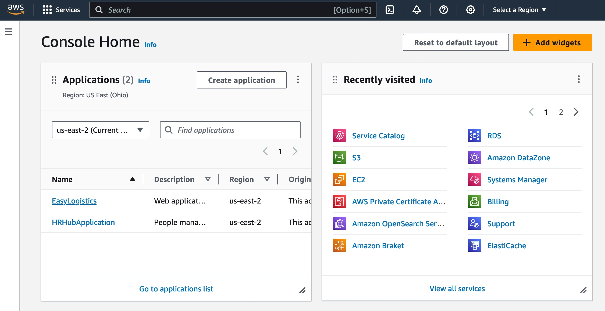
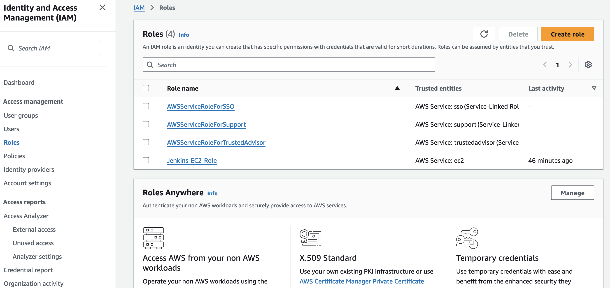
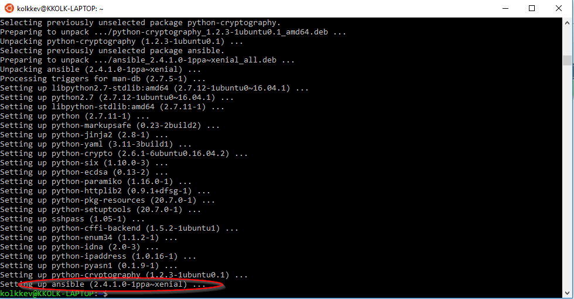
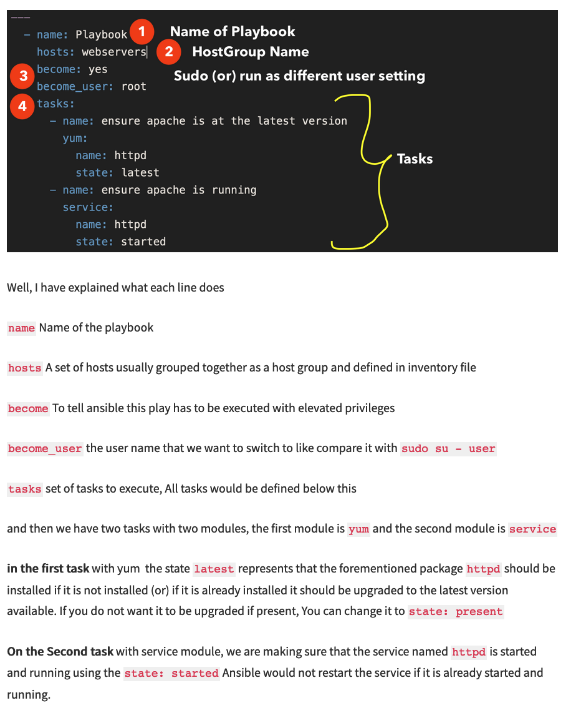
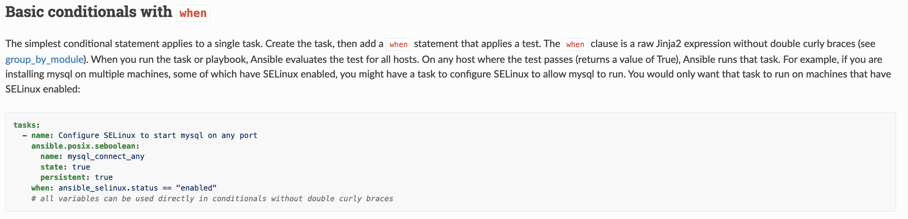

Présentation Générale d'AWS (Amazon Web Services)
Introduction
Amazon Web Services (AWS) est une plateforme de services cloud créée par Amazon. Lancée en 2006, elle propose des solutions de calcul, de stockage, de bases de données, d'intelligence artificielle, et bien plus, pour des entreprises de toutes tailles. AWS permet de construire des infrastructures évolutives et flexibles, de façon sécurisée, et avec des coûts ajustés à la consommation.
Les Principaux Services AWS
AWS compte plus de 200 services répartis en plusieurs catégories :
-
Calcul (Compute) : Ces services permettent d'héberger et d'exécuter des applications, de provisionner des serveurs, ou de gérer des conteneurs et des fonctions sans serveur.
- EC2 (Elastic Compute Cloud) : Service de machines virtuelles pour exécuter des applications sur des serveurs configurables.
- Lambda : Service de calcul sans serveur pour exécuter du code en réponse à des événements sans provisionner de serveurs.
- ECS (Elastic Container Service) et EKS (Elastic Kubernetes Service) : Services pour l'orchestration de conteneurs Docker.
-
Stockage (Storage) : AWS propose plusieurs solutions de stockage pour répondre aux besoins de performance, de sécurité et d'évolutivité des données.
- S3 (Simple Storage Service) : Stockage d'objets haute disponibilité pour les données de tout type, avec des options de gestion du cycle de vie.
- EBS (Elastic Block Store) : Stockage de type bloc pour les instances EC2, destiné aux applications exigeant une faible latence.
- Glacier : Service de stockage à faible coût pour l'archivage et la sauvegarde des données.
-
Bases de Données : AWS offre des bases de données relationnelles, non relationnelles et des bases de données spécialisées.
- RDS (Relational Database Service) : Service géré pour les bases de données relationnelles comme MySQL, PostgreSQL et Oracle.
- DynamoDB : Base de données NoSQL rapide et entièrement gérée.
- Redshift : Service de data warehouse pour l'analyse de données à grande échelle.
-
Mise en Réseau (Networking) : Les services de réseau d'AWS permettent de gérer les connexions et la sécurité des infrastructures cloud.
- VPC (Virtual Private Cloud) : Service permettant de créer un réseau privé dans le cloud.
- Route 53 : Service DNS pour la gestion des noms de domaine et du routage des requêtes.
- CloudFront : Réseau de distribution de contenu (CDN) pour la diffusion de contenu avec faible latence.
-
Sécurité et Identité : AWS propose des outils de gestion des identités, des accès et des contrôles de sécurité.
- IAM (Identity and Access Management) : Gestion des utilisateurs et des permissions pour contrôler l'accès aux ressources AWS.
- KMS (Key Management Service) : Service de gestion des clés de chiffrement pour sécuriser les données.
- GuardDuty et Inspector : Services de détection des menaces et d'analyse de sécurité.
-
Outils d’Analyse et de Big Data : AWS propose des outils pour l’analyse de données, le traitement des big data et l’apprentissage automatique.
- EMR (Elastic MapReduce) : Service de traitement de big data compatible avec Hadoop et Spark.
- Athena : Service d’interrogation de données stockées dans S3 avec SQL.
- SageMaker : Plateforme pour développer, entraîner et déployer des modèles de machine learning.
-
Outils DevOps et CI/CD : AWS offre des outils pour automatiser le déploiement, la surveillance et la gestion des applications.
- CodePipeline : Orchestration des étapes de CI/CD pour automatiser le déploiement de logiciels.
- CloudFormation : Infrastructure-as-code pour définir et provisionner l’infrastructure.
- CloudWatch : Surveillance des ressources et applications AWS.
Avantages d’AWS
- Évolutivité : AWS permet de démarrer avec de petites ressources et de les augmenter en fonction de la demande.
- Tarification à la consommation : AWS facture uniquement les ressources utilisées, avec des options de réduction des coûts grâce aux instances réservées et à l'optimisation des ressources.
- Sécurité et conformité : AWS propose des services de sécurité avancés et répond à de nombreuses normes de conformité, notamment SOC, PCI-DSS, et GDPR.
- Disponibilité mondiale : AWS est réparti sur plusieurs régions géographiques dans le monde, offrant une disponibilité et une tolérance aux pannes accrues.
- Flexibilité et choix : Avec des centaines de services disponibles, AWS permet de choisir les outils et solutions les plus adaptés à chaque besoin technique.
Cas d'Usage Courants
- Hébergement de Sites Web et Applications : AWS est utilisé pour héberger des sites web et des applications web évolutifs grâce à EC2, S3, et CloudFront.
- Big Data et Analyse : Les entreprises utilisent AWS pour collecter, stocker et analyser des données en temps réel avec EMR, Redshift, et Athena.
- Applications Serverless : Grâce à AWS Lambda et aux API Gateway, il est possible de créer des applications sans infrastructure de serveur.
- Machine Learning et IA : AWS SageMaker permet aux développeurs et data scientists de créer et déployer des modèles d’intelligence artificielle rapidement.
- Disaster Recovery et Sauvegarde : AWS offre des options de sauvegarde et de récupération de données pour garantir la résilience des infrastructures, avec des services comme S3 et Glacier.
1. Introduction
Ce guide s’adresse aux étudiants en master spécialisé en cloud computing et ingénierie des données souhaitant maîtriser trois outils incontournables pour l’automatisation et le DevOps : Amazon Web Services (AWS), Jenkins, et Ansible. Nous partirons des concepts de base pour progresser vers des configurations avancées et une intégration complète, idéale pour des infrastructures cloud et des flux de données.
En combinant AWS pour les ressources cloud scalables, Jenkins pour l’automatisation des pipelines CI/CD, et Ansible pour la gestion de configuration, ce guide vise à développer des compétences essentielles pour concevoir des environnements résilients et optimisés, adaptés aux exigences des projets modernes en cloud et données.
1.1 Objectif du document
Ce document vise à offrir une compréhension complète et progressive d’AWS, Jenkins et Ansible pour construire des infrastructures cloud modernes et automatiser le cycle de vie du développement, de la configuration au déploiement continu. Ensemble, ces technologies permettent une gestion agile et efficace des ressources dans le cloud.
1.2 Public cible et prérequis
Ce guide est conçu pour les étudiants en master dans les domaines du cloud computing et de l’ingénierie des données, avec un intérêt pour les pratiques DevOps. Les prérequis recommandés sont :
- Linux et commandes de base, utiles pour naviguer dans les environnements cloud.
- Notions de réseau : compréhension de TCP/IP et SSH pour les configurations réseau sécurisées.
- Scripts et programmation (comme Bash ou Python) pour faciliter l'utilisation d'Ansible et Jenkins.
2. Vue d'ensemble d'AWS
2.1 Qu'est-ce qu'AWS ?
Amazon Web Services (AWS) est une plateforme de cloud computing qui offre un large éventail de services permettant aux entreprises de gérer des applications et des données de manière évolutive, sécurisée et sur demande. AWS permet de louer des ressources (par exemple, puissance de calcul, stockage, bases de données) au lieu d’acheter une infrastructure physique, ce qui facilite la flexibilité opérationnelle et réduit les coûts. Aujourd’hui, AWS est le leader mondial du cloud, utilisé dans des secteurs allant de la finance à la santé en passant par les technologies de l'information.

2.2 Principaux concepts de la gestion cloud avec AWS
Introduction au Cloud Computing
Le cloud computing est un modèle qui permet d'accéder à des ressources informatiques à la demande, sans la gestion directe d'infrastructures physiques. Cela offre des avantages tels que la scalabilité instantanée, la sécurité, et la possibilité d'économiser des coûts en ne payant que pour les ressources utilisées.
Vue d’ensemble des services AWS
AWS offre une large gamme de services, répartis dans plusieurs catégories :
- Calcul (EC2, Lambda) : pour héberger et exécuter des applications, des instances virtuelles et des fonctions sans serveur.
- Stockage (S3, EBS) : pour le stockage sécurisé des données avec de nombreuses options de résilience.
- Bases de données (RDS, DynamoDB) : pour la gestion de données structurées et non structurées.
- Réseau et contenu (VPC, CloudFront) : pour contrôler l’accès et distribuer du contenu efficacement et de manière sécurisée.
- Outils de gestion et surveillance (CloudWatch, CloudTrail) : pour surveiller et gérer l’activité des services AWS.

2.3 Principaux services AWS
Examinons certains des services AWS les plus utilisés, essentiels pour toute infrastructure cloud.
Calcul : Amazon EC2 et AWS Lambda
- Amazon EC2 (Elastic Compute Cloud) : Ce service permet de créer et gérer des instances (machines virtuelles) pour exécuter des applications. Il prend en charge une grande variété de types d’instances et offre une flexibilité inégalée dans la configuration des ressources.
- AWS Lambda : Ce service sans serveur permet d’exécuter du code en réponse à des événements sans avoir besoin de gérer des serveurs sous-jacents. Idéal pour les applications basées sur des événements, il fonctionne sur un modèle de facturation à l'utilisation, garantissant ainsi des coûts contrôlés.
Stockage : Amazon S3 et Amazon EBS
- Amazon S3 (Simple Storage Service) : Un service de stockage d'objets offrant une durabilité de 99,999999999% et la capacité de stocker une quantité illimitée de données. S3 est hautement disponible, sécurisé, et flexible, parfait pour la gestion des sauvegardes, de l’archivage, ou des données de big data.
- Amazon EBS (Elastic Block Store) : Conçu pour être utilisé avec EC2, EBS fournit des disques persistants que les instances peuvent monter comme stockage local. Idéal pour les applications qui nécessitent des performances élevées et une persistance des données.
Bases de données : Amazon RDS et Amazon DynamoDB
- Amazon RDS (Relational Database Service) : Un service géré pour les bases de données relationnelles comme MySQL, PostgreSQL, et Oracle, facilitant la mise en place, la maintenance et l’extensibilité des bases de données relationnelles.
- Amazon DynamoDB : Une base de données NoSQL entièrement gérée, conçue pour un stockage rapide et scalable de données non structurées, idéale pour les applications web et mobiles.
2.4 Gestion des ressources, sécurité et facturation dans AWS
Gestion des ressources
Avec AWS, la gestion des ressources est centralisée via la console AWS Management Console et l’API AWS CLI (Command Line Interface). Ces outils offrent une vue d'ensemble pour surveiller les ressources, gérer les configurations, et automatiser les tâches.
Sécurité et conformité
AWS propose des services de sécurité intégrés et rigoureux pour garantir la conformité aux normes industrielles :
- IAM (Identity and Access Management) : Permet la gestion des utilisateurs, des rôles et des autorisations, assurant un contrôle strict de l'accès aux ressources.
- AWS KMS (Key Management Service) : Permet de gérer les clés de chiffrement pour protéger les données stockées.
- CloudTrail : Enregistre les actions des utilisateurs et des services, offrant une piste d’audit essentielle pour la sécurité et la conformité.
Facturation et gestion des coûts
AWS propose des outils puissants pour suivre et optimiser les dépenses :
- AWS Billing : Un tableau de bord permettant de visualiser et de gérer les dépenses en temps réel.
- AWS Cost Explorer : Permet une analyse avancée des coûts pour identifier les tendances et optimiser les dépenses.
- Budgets AWS : Permet de définir des seuils de dépenses et de recevoir des alertes en cas de dépassement, pour une gestion proactive des coûts.

3. Amazon EC2 (Elastic Compute Cloud)
3.1 Introduction à EC2
Définition et utilité
Amazon EC2 (Elastic Compute Cloud) est un service qui fournit des instances de calcul virtualisées dans le cloud. Il permet aux utilisateurs de louer des serveurs virtuels pour exécuter des applications, facilitant la scalabilité et la flexibilité tout en réduisant le coût de possession d'infrastructure.
Principales fonctionnalités et cas d’utilisation
Les principales fonctionnalités incluent :
- Scalabilité élastique : permet d’ajouter ou de supprimer des instances en fonction de la charge.
- Types d'instances variés : choix d'instances adaptées aux besoins de calcul, de mémoire, ou de stockage spécifiques.
- Facturation à la demande : paiement pour le temps utilisé, avec des options d'instances réservées et spot pour des économies supplémentaires.
Cas d’utilisation :
- Hébergement de sites web et d'applications.
- Exécution d'analyses de données.
- Hébergement de serveurs de développement/test.
Image Suggestion:
- Image 1: Diagramme montrant une instance EC2 connectée à d'autres services AWS (par exemple, une base de données RDS ou un stockage S3) pour illustrer l'intégration et l'interconnectivité d'EC2 dans une infrastructure cloud.
3.2 Prise en main d'EC2
Création d'un compte AWS
Pour utiliser EC2, il faut d'abord créer un compte AWS. Le processus d’inscription demande des informations de base et un moyen de paiement.
Navigation dans le tableau de bord EC2
Une fois connecté, le tableau de bord EC2 présente les différentes options d’instances, le suivi des volumes EBS, la gestion des IP élastiques, et d'autres outils.
Lancement et connexion à une instance EC2
- Lancer une instance : choisir le type d'instance, le système d'exploitation, et les options de configuration de sécurité.
- Connexion : une fois l’instance lancée, vous pouvez vous connecter via SSH.
Image Suggestion:
- Image 2: Capture d'écran du tableau de bord EC2 montrant le processus de lancement d'une nouvelle instance. Cette image devrait inclure l'interface de sélection du type d’instance pour guider les nouveaux utilisateurs.
3.3 Types d'instances
Présentation des familles d'instances EC2
Amazon EC2 propose plusieurs familles d'instances adaptées à différents besoins :
-
Généraliste : Instances de type "t2", "t3" (ex. t3.micro) pour des charges de travail équilibrées.
-
Optimisé pour le calcul : Instances de type "c5" pour les calculs intensifs.
-
Optimisé pour la mémoire : Instances "r5" pour des applications nécessitant beaucoup de mémoire.
-
Optimisé pour le stockage : Instances "i3" pour des applications nécessitant des performances de stockage élevées.
Choix du type d'instance adapté aux besoins
Le choix du type d'instance dépend des besoins de l’application. Pour un site web simple, un t2.micro suffira, tandis qu'une application d'apprentissage automatique pourrait nécessiter une instance GPU comme p3.
Image Suggestion:
- Image 3: Tableau comparatif des types d’instances EC2 avec leurs caractéristiques principales (vCPU, RAM, EBS, etc.). Ce tableau aidera les utilisateurs à comprendre les différences entre les familles d’instances.
3.4 Réseau et sécurité
Groupes de sécurité et pare-feu
Les groupes de sécurité contrôlent le trafic entrant et sortant des instances EC2. Chaque instance peut avoir plusieurs groupes de sécurité associés.
IP élastiques et accès SSH
Les IP élastiques permettent d’avoir une adresse IP fixe associée à une instance EC2. La connexion SSH permet d'accéder aux instances Linux.
Gestion des clés de sécurité
Les paires de clés sont utilisées pour l’authentification lors de la connexion aux instances. AWS génère une clé privée qui doit être conservée en sécurité par l’utilisateur.
Image Suggestion:
- Image 4: Capture d’écran de la configuration d’un groupe de sécurité dans la console AWS, montrant comment définir les règles de trafic entrant pour autoriser le SSH (port 22).
3.5 Options de stockage
EBS (Elastic Block Store)
EBS est un stockage persistant qui peut être attaché à une instance EC2. Les volumes EBS sont idéaux pour stocker des données nécessitant une haute disponibilité et des sauvegardes fréquentes.
Instance Store
Le Instance Store offre un stockage temporaire qui n'est disponible que pendant la durée de vie de l'instance. Il convient aux applications nécessitant un stockage local rapide, mais non persistant.
Création et attachement des volumes EBS
Les volumes EBS peuvent être créés et attachés facilement via la console EC2. Une fois attachés, ils apparaissent comme des disques locaux sur l’instance.
Image Suggestion:
- Image 5: Capture d'écran montrant la création d'un volume EBS dans la console EC2. Cela devrait inclure la sélection de la taille et du type de volume pour guider les utilisateurs.
3.6 Concepts avancés d'EC2
Auto-scaling et équilibrage de charge
Auto Scaling ajuste automatiquement le nombre d’instances en fonction de la demande. Elastic Load Balancing (ELB) répartit le trafic entre les instances pour assurer une haute disponibilité et une tolérance aux pannes.
Instances Spot et réservées
-
Instances Spot : accès à des instances à tarif réduit, idéal pour les charges de travail flexibles.
-
Instances réservées : engagement sur un ou trois ans pour obtenir une réduction de coût.
Groupes de placement EC2
Les Groupes de placement permettent de contrôler la disposition des instances pour des charges de travail nécessitant une faible latence ou une bande passante élevée.
Image Suggestion:
- Image 6: Diagramme montrant le fonctionnement d'un groupe Auto Scaling avec un ELB distribuant le trafic. Cela permet de visualiser l’évolutivité automatique d’EC2.
Cette section maintenant enrichie de liens multilingues devrait être claire et exhaustive pour les utilisateurs cherchant à explorer Amazon EC2.
4. Amazon S3 (Simple Storage Service)
4.1 Introduction à S3
Qu'est-ce que S3 ?
Amazon S3 (Simple Storage Service) est un service de stockage d’objets qui permet aux utilisateurs de stocker et de récupérer n’importe quel volume de données, à tout moment et depuis n’importe où. S3 est conçu pour offrir une durabilité, une disponibilité et une sécurité élevées pour les données critiques.
Principales fonctionnalités et cas d’utilisation
Les principales fonctionnalités d'Amazon S3 incluent :
- Stockage sécurisé : avec des options de chiffrement et des contrôles d'accès granulaire.
- Durabilité et disponibilité : S3 garantit une durabilité de 99,999999999% (11 9s) des données.
- Évolutivité et gestion simplifiée : peut stocker une quantité illimitée de données.
Cas d’utilisation :
- Sauvegarde et archivage de données.
- Stockage d’images, vidéos et autres fichiers pour les applications web.
- Analyse big data et stockage pour l’IA et le machine learning.
Image Suggestion:
- Image 1: Schéma montrant un bucket S3 avec plusieurs objets (fichiers), illustrant les fonctionnalités de base de S3 (stockage sécurisé, haute disponibilité).

Le diagramme montre comment déplacer des données vers Amazon S3, gérer les données stockées dans Amazon S3 et analyser les données avec d'autres services. Trois sections s'affichent de gauche à droite. La première section présente une illustration d'une base de données, d'un serveur et d'un document. La première section est intitulée « Déplacer des données ». La première section indique : « Déplacez vos données vers Amazon S3, où qu'elles se trouvent - dans le nuage, dans les applications ou sur site ». Des icônes à proximité indiquent différents types de données : « données analytiques », “fichiers journaux”, “données d'application”, “vidéos et images” et “sauvegarde et archivage”. La deuxième section est illustrée par un seau vide. La deuxième section est intitulée « Amazon S3 ». La deuxième section dit : « Stockage d'objets conçu pour stocker et récupérer n'importe quelle quantité de données à partir de n'importe quel endroit ». La deuxième section contient plus de texte sous le titre « Stocker des données ». Le texte dit : « Créer un seau, spécifier la région, les contrôles d'accès et les options de gestion. Télécharger n'importe quelle quantité de données ». Une illustration à proximité montre un seau contenant un carré, un cercle et un triangle. La deuxième section comporte également des icônes qui montrent les fonctionnalités d'Amazon S3. Ces fonctionnalités sont les suivantes : « Contrôlez l'accès aux données », « Optimisez les coûts grâce aux classes de stockage », « Répliquez les données dans n'importe quelle région », « Accédez à vos données depuis vos locaux ou un VPC », « Protégez et sécurisez vos données » et « Bénéficiez d'une visibilité sur votre stockage ». La troisième section est intitulée « Analyser les données ». La troisième section dit : « Utilisez AWS et des services tiers pour analyser vos données et en tirer des enseignements. » Les icônes à proximité indiquent des méthodes d'analyse des données : « intelligence artificielle (IA) », “analyse avancée” et “apprentissage machine (ML)”.
Voici un script d'exemple qui :
- Crée un Bucket S3 pour une application de stockage de photos
- Télécharge des images dans le bucket pour en montrer le fonctionnement
- Mets en place une politique de propriétaire pour attribuer le Bucket à un unique rôle (ou utilisateur)
# Définissez le nom du bucket et la région
BUCKET_NAME="app-stockage-photos"
REGION="eu-west-3" # Changez cette valeur selon la région souhaitée
IMAGES=("image1.png" "image2.png" "image3.png") # Liste des images à télécharger
#USER_ARN="arn:aws:iam::123456789012:user/specific-user" # Remplacez par l'ARN de l'utilisateur autorisé
ROLE_ARN="arn:aws:iam::354918371346:role/Jenkins-EC2-Role"
# 1. Créer le bucket S3
aws s3api create-bucket --bucket $BUCKET_NAME --region $REGION --create-bucket-configuration LocationConstraint=$REGION
echo "Bucket $BUCKET_NAME créé dans la région $REGION."
# 2. Téléchargez les images dans le bucket
for IMAGE in "${IMAGES[@]}"; do
aws s3 cp $IMAGE s3://$BUCKET_NAME/
echo "$IMAGE téléchargée dans le bucket $BUCKET_NAME."
done
# 3. Configurer la politique de contrôle d’accès du bucket
cat > bucket-policy.json <<EOL
{
"Version": "2012-10-17",
"Statement": [
{
"Effect": "Allow",
"Principal": {
"AWS": "$ROLE_ARN"
},
"Action": "s3:GetObject",
"Resource": "arn:aws:s3:::$BUCKET_NAME/*"
}
]
}
EOL
aws s3api put-bucket-policy --bucket $BUCKET_NAME --policy file://bucket-policy.json
echo "Politique de contrôle d’accès configurée pour limiter l'accès au bucket $BUCKET_NAME à l'utilisateur spécifié."
# Nettoyage (optionnel) : Supprimez le fichier temporaire de politique
rm bucket-policy.json
4.2 Prise en main de S3
Création d’un bucket S3
Un bucket est un conteneur dans lequel les fichiers (objets) sont stockés. La création d’un bucket est la première étape pour utiliser Amazon S3.
Gestion des fichiers (objets) dans S3
Les fichiers stockés dans S3 sont appelés objets. Chaque objet est identifié de manière unique dans un bucket par une clé (nom d'objet) et peut contenir des métadonnées.
Régions et réplication S3
Les buckets S3 sont créés dans des régions spécifiques. AWS propose la réplication inter-région pour copier automatiquement les objets d’un bucket dans une autre région, garantissant ainsi la redondance et la conformité.
4.3 Gestion des données et sécurité
Politiques de bucket et permissions
Les politiques de bucket permettent de définir des permissions pour contrôler l'accès aux buckets et aux objets qu'ils contiennent. Elles sont utilisées pour gérer les accès publics et privés.
Contrôles d'accès (ACL)
Les listes de contrôle d’accès (ACL) permettent de gérer les autorisations au niveau des objets. Cela inclut la possibilité de donner des accès en lecture ou en écriture à des utilisateurs spécifiques.
Options de chiffrement
Amazon S3 prend en charge le chiffrement côté serveur (SSE) et le chiffrement côté client pour protéger les données. Les clés de chiffrement peuvent être gérées par AWS ou par l’utilisateur.
4.4 Classes de stockage et gestion du cycle de vie
Classes de stockage S3
Amazon S3 propose plusieurs classes de stockage adaptées aux différents cas d'utilisation, notamment :
-
Standard : pour des accès fréquents avec une haute disponibilité.
-
Intelligent-Tiering : ajuste automatiquement les coûts de stockage en fonction des accès.
-
Glacier et Glacier Deep Archive : pour l'archivage des données à long terme, avec des coûts de stockage très bas.
Politiques de cycle de vie pour l'optimisation des coûts
Les politiques de cycle de vie permettent de définir des règles pour transférer automatiquement les objets entre différentes classes de stockage en fonction de leur âge ou de leur fréquence d'accès. Cela optimise les coûts en déplaçant automatiquement les objets rarement utilisés vers des classes de stockage moins chères.
4.5 Fonctions avancées de S3
Versioning et verrouillage d'objets
La gestion des versions permet de conserver plusieurs versions d'un objet dans un bucket, tandis que le verrouillage d'objets empêche toute suppression accidentelle. Cela offre une protection contre les pertes de données.
Réplication inter-région
La réplication inter-région permet de copier les objets d'un bucket source vers un bucket de destination dans une autre région AWS. C'est utile pour la conformité aux régulations de stockage
, la récupération après sinistre et l'accessibilité mondiale des données.
Accélération de transfert S3
L'accélération de transfert S3 utilise le réseau AWS CloudFront pour transférer des données vers et depuis S3 plus rapidement, surtout pour les utilisateurs éloignés géographiquement du bucket S3.
Présentation Générale de Jenkins
Introduction
Jenkins est un outil open-source d'intégration et de livraison continues (CI/CD), principalement utilisé pour automatiser les processus de développement, de test et de déploiement des applications. Créé en 2011 comme une évolution de Hudson, Jenkins est devenu une référence dans le domaine DevOps et CI/CD grâce à sa flexibilité, son large écosystème de plugins, et sa grande communauté de contributeurs.
Principales Fonctionnalités de Jenkins
-
Intégration Continue (CI) : Jenkins permet aux équipes de développement de construire, tester et intégrer du code fréquemment et automatiquement, garantissant que les nouvelles modifications n’introduisent pas de régressions.
-
Livraison Continue (CD) : En plus de l’intégration continue, Jenkins automatise les étapes de déploiement vers les environnements de test, de préproduction, et de production, réduisant le délai de mise en production.
-
Pipeline as Code : Avec Jenkinsfile, Jenkins permet de définir les pipelines CI/CD sous forme de code, facilitant la gestion, le versioning, et la standardisation des pipelines.
-
Écosystème de Plugins : Jenkins propose plus de 1 500 plugins pour étendre ses fonctionnalités. Ces plugins permettent d’intégrer Jenkins avec des outils de contrôle de version (Git, SVN), de gestion des conteneurs (Docker), de cloud (AWS, Azure, GCP), de tests, de surveillance, et bien d’autres.
-
Gestion des Notifications et Reporting : Jenkins envoie des notifications (par e-mail, Slack, etc.) sur les résultats des builds et les étapes de pipeline, permettant aux équipes de suivre et d’agir en temps réel. Il génère également des rapports pour aider à analyser les performances et les résultats des tests.
-
Extensibilité et Scalabilité : Jenkins peut être configuré pour distribuer des tâches sur plusieurs machines grâce à une architecture maître-agent, permettant d’exécuter des builds en parallèle et de répondre aux besoins croissants des équipes.
Architecture de Jenkins
-
Jenkins Master : Le serveur principal gère l’interface utilisateur, les configurations de jobs, la planification des builds, et le déclenchement des tâches. Il coordonne aussi les agents et collecte les résultats des exécutions.
-
Jenkins Agent : Les agents (ou "nœuds") sont des machines qui exécutent les tâches de build et de test. Cela permet de décharger le serveur principal et de répartir les tâches, ce qui est essentiel pour les grandes équipes ou les projets nécessitant des ressources importantes.
-
Pipeline Jenkins : Le pipeline est un ensemble d’étapes qui représentent le workflow de CI/CD. Avec Declarative Pipeline (plus simple et structuré) ou Scripted Pipeline (plus flexible), Jenkins offre la possibilité de définir des pipelines complexes, incluant des étapes de build, de test, de déploiement, et de reporting.

Les Pipelines Jenkins
Les pipelines permettent d’automatiser et d’orchestrer les étapes CI/CD sous forme de code.
- Jenkinsfile : Un fichier qui décrit le pipeline en utilisant soit une syntaxe déclarative, soit une syntaxe scriptée. Le Jenkinsfile permet d’intégrer le pipeline dans le contrôle de version.
- Stages et Steps : Un pipeline est structuré en stages (phases du workflow) et steps (actions spécifiques). Par exemple, un pipeline typique inclura des étapes de build, de tests, et de déploiement.
- Multibranch Pipeline : Jenkins peut automatiquement détecter et exécuter des pipelines pour chaque branche d’un dépôt Git, permettant ainsi de tester et déployer le code de manière indépendante par branche.
Exemple de Jenkinsfile (Déclaratif) :
pipeline {
agent any
stages {
stage('Build') {
steps {
echo 'Building...'
sh 'make build'
}
}
stage('Test') {
steps {
echo 'Testing...'
sh 'make test'
}
}
stage('Deploy') {
steps {
echo 'Deploying...'
sh 'make deploy'
}
}
}
}
Avantages de Jenkins
- Automatisation et Productivité : En automatisant les builds et les tests, Jenkins réduit le besoin d’interventions manuelles, permettant aux équipes de se concentrer sur le développement.
- Flexibilité et Extensibilité : Grâce à son écosystème de plugins, Jenkins peut être intégré avec presque tous les outils DevOps.
- Scalabilité : L’architecture maître-agent permet d’exécuter des centaines de builds en parallèle, ce qui est essentiel pour les projets complexes.
- Transparence et Collaboration : Jenkins génère des rapports et notifications, offrant une visibilité complète sur l’état du code et facilitant la collaboration entre les équipes.
Cas d'Usage Courants
-
Développement et Build Automatisé : Jenkins automatise la compilation, les tests unitaires et la vérification de qualité du code à chaque commit.
-
Déploiement Automatisé et Livraison Continue : Les équipes DevOps peuvent configurer Jenkins pour déployer des applications dans divers environnements (test, préproduction, production) de manière automatique.
-
Orchestration Multibranche : Avec le Multibranch Pipeline, Jenkins détecte automatiquement les branches d’un dépôt et y associe des pipelines dédiés, permettant un contrôle indépendant pour chaque branche.
-
Intégration avec les Conteneurs et le Cloud : Jenkins s'intègre facilement avec Docker, Kubernetes, et des services cloud comme AWS, Azure, et Google Cloud, facilitant le déploiement d’applications conteneurisées.
Partie 1 : Introduction à Jenkins et à l’Automatisation CI/CD
Objectifs
Dans cette première partie, vous allez :
- Comprendre ce que sont l’intégration continue (CI) et le déploiement continu (CD).
- Découvrir pourquoi et comment Jenkins joue un rôle essentiel dans la mise en place de pipelines CI/CD automatisés.
1.1 Présentation de l’automatisation CI/CD
Qu'est-ce que l’intégration continue (CI) ?
L’intégration continue (Continuous Integration ou CI) est une pratique de développement qui encourage l'intégration fréquente des modifications de code dans une branche principale. Grâce à CI, chaque modification apportée au code est automatiquement testée. Cela permet de détecter rapidement les erreurs et d'assurer la cohérence du code au fur et à mesure du développement.
Qu'est-ce que le déploiement continu (CD) ?
Le déploiement continu (Continuous Deployment ou CD) est une extension de l'intégration continue. Il vise à automatiser la mise en production des modifications de code, de manière à pouvoir les livrer aux utilisateurs rapidement et en toute sécurité. En résumé, le CD est l'étape suivante qui, après l’intégration réussie des modifications de code, les déploie automatiquement dans des environnements de production.
Pourquoi automatiser les pipelines de développement ?
L’automatisation des pipelines CI/CD présente de nombreux avantages :
- Gain de temps : Les tâches répétitives comme les tests et les déploiements sont automatisées, ce qui réduit les délais de livraison.
- Réduction des erreurs humaines : En automatisant, on diminue le risque d’erreurs humaines, notamment lors de la phase de déploiement.
- Amélioration de la qualité du code : Grâce aux tests automatiques et aux validations de code, les erreurs sont détectées en amont.
- Collaboration renforcée : Les équipes peuvent travailler de manière plus agile, en intégrant leurs modifications régulièrement sans crainte de conflits de code.

1.2 Introduction à Jenkins
Qu’est-ce que Jenkins ?
Jenkins est un outil open-source d’automatisation, principalement utilisé pour la mise en place de pipelines CI/CD. Il aide les équipes de développement à intégrer et à déployer régulièrement leur code, en simplifiant et en automatisant les processus de test et de déploiement.
Histoire et communauté open-source
Jenkins a commencé sous le nom de Hudson en 2004 avant de devenir un projet open-source indépendant sous le nom de Jenkins en 2011. Depuis, il bénéficie du soutien d'une vaste communauté de développeurs, et des centaines de plugins ont été créés pour étendre ses fonctionnalités.
Avantages et fonctionnalités de Jenkins
- Open-source et extensible : Jenkins est gratuit et peut être personnalisé via de nombreux plugins pour répondre aux besoins spécifiques de chaque projet.
- Automatisation des tâches répétitives : Jenkins permet d’automatiser les tests, les compilations, et les déploiements, ce qui est crucial pour les équipes CI/CD.
- Flexibilité : Jenkins peut s’intégrer avec presque tous les systèmes de versionnage et outils de test.
Présentation de l'interface utilisateur de Jenkins
L'interface utilisateur de Jenkins est composée de plusieurs sections clés :
- Tableau de bord : Accueil principal avec les projets et pipelines actifs.
- Jobs et builds : Sections où l’on configure les tâches et les étapes d’automatisation.
- Gestion des plugins : Permet l’ajout de fonctionnalités supplémentaires.
- Historique des builds : Suivi des builds passés et des logs associés.

1.3 Installation de Jenkins
Installation de Jenkins sur différentes plateformes
Pour commencer à utiliser Jenkins, il faut l’installer sur votre machine ou sur un serveur. Jenkins est compatible avec plusieurs plateformes.
-
Installation sur Windows :
- Téléchargez Jenkins depuis le site officiel.
- Suivez les étapes d’installation, qui incluent la configuration d’un chemin pour Java.
- Une fois installé, démarrez Jenkins et accédez à l’interface via
http://localhost:8080.
-
Installation sur Linux :
- Sur une distribution comme Ubuntu, vous pouvez installer Jenkins en ajoutant son dépôt :
sudo apt update sudo apt install jenkins - Lancez Jenkins avec la commande
sudo systemctl start jenkinset accédez à l’interface viahttp://localhost:8080.
- Sur une distribution comme Ubuntu, vous pouvez installer Jenkins en ajoutant son dépôt :
-
Installation avec Docker :
- Si vous préférez utiliser Docker, exécutez la commande suivante pour démarrer Jenkins dans un conteneur :
docker run -p 8080:8080 -p 50000:50000 jenkins/jenkins:lts - Accédez ensuite à Jenkins via
http://localhost:8080.
- Si vous préférez utiliser Docker, exécutez la commande suivante pour démarrer Jenkins dans un conteneur :
Configuration initiale de Jenkins
Après l’installation, suivez les étapes de configuration initiale :
- Installation des plugins recommandés : Jenkins propose une liste de plugins essentiels, qui permettent de configurer des fonctionnalités de base (intégration Git, pipelines, etc.).
- Création d’un compte administrateur : Sécurisez votre Jenkins en créant un compte administrateur.
- Paramètres de base : Explorez les paramètres, notamment ceux pour l'ajout de serveurs de build et la gestion des notifications.

Exercice : Installer Jenkins sur sa machine locale ou via Docker
Objectif de l'exercice : Installer Jenkins pour pouvoir l’utiliser dans les prochaines sections.
Étapes de l’exercice :
- Choisissez la méthode d’installation : Windows, Linux ou Docker, selon votre système.
- Téléchargez et installez Jenkins : Suivez les étapes spécifiques pour votre plateforme.
- Accédez à Jenkins via le navigateur : Ouvrez
http://localhost:8080pour accéder à l’interface. - Configuration initiale : Installez les plugins recommandés et créez un compte administrateur.
Astuce : Si vous n’avez pas installé Docker, cette installation peut être une bonne opportunité d’apprendre à l’utiliser, car cela simplifie la gestion de Jenkins.
Ressources supplémentaires
Questions de Révision
Questions de Révision
Qu'est-ce que l'intégration continue (CI) ?
CI est une pratique de développement consistant à intégrer fréquemment des modifications de code, qui sont ensuite testées automatiquement pour détecter rapidement les erreurs.Quels sont les principaux avantages de Jenkins ?
Jenkins est open-source, extensible, et permet d'automatiser les tâches CI/CD, ce qui aide les équipes à livrer des modifications plus rapidement et de manière fiable.Comment peut-on installer Jenkins via Docker ?
En exécutant la commande `docker run -p 8080:8080 -p 50000:50000 jenkins/jenkins:lts`, ce qui démarre Jenkins dans un conteneur accessible sur `http://localhost:8080`.Partie 2 : Premiers Pas avec Jenkins
Objectifs
Dans cette deuxième partie, vous allez apprendre à :
- Créer et exécuter des jobs simples et paramétrés dans Jenkins.
- Comprendre la structure d’un job et ses étapes.
- Planifier et déclencher des builds automatiquement avec différentes méthodes, y compris les webhooks.
2.1 Création d’un job Jenkins basique
Présentation des types de jobs dans Jenkins
Jenkins propose plusieurs types de jobs, chacun adapté à des besoins variés :
- Freestyle : Un job flexible pour des tâches simples comme exécuter des scripts ou déployer des fichiers. Idéal pour commencer et tester des configurations de base.
- Pipeline : Un job basé sur un script Jenkinsfile, permettant de créer des workflows complexes en tant que code.
- Multibranch Pipeline : Spécialement conçu pour les projets gérant plusieurs branches, chaque branche déclenche automatiquement un pipeline dédié.
- Folder : Permet de regrouper plusieurs jobs dans un dossier, utile pour organiser des projets de grande envergure.
Dans cette partie, nous allons commencer avec un job Freestyle, qui convient bien aux démonstrations et aux configurations de base.
Création d’un job Freestyle
- Accédez au tableau de bord Jenkins et cliquez sur New Item (Nouvel élément).
- Nommez votre job (par exemple, “Job de test”) et sélectionnez Freestyle project (Projet Freestyle).
- Cliquez sur OK pour créer le job.
Exécution d'un script Shell ou de commande Windows simple
Pour ce premier job, nous allons configurer un script simple qui affiche "Hello, World!" :
- Dans les paramètres du job, allez à la section Build (Construire) et choisissez Execute shell (ou Exécuter une commande sous Windows sur un système Windows).
- Dans la zone de texte, entrez la commande suivante :
echo "Hello, World!" - Cliquez sur Save (Sauvegarder) pour enregistrer le job.
Source: https://www.geeksforgeeks.org/creating-and-configuring-freestyle-projects-in-jenkins/
Création de jobs paramétrés
Les jobs paramétrés permettent de personnaliser l’exécution d’un job avec des valeurs dynamiques, comme le choix d’une branche spécifique ou l’ajout d’un nom de version.
Pour configurer un job paramétré :
- Ouvrez un job existant ou créez-en un nouveau.
- Cochez l'option This project is parameterized (Ce projet est paramétré) dans les paramètres du job.
- Cliquez sur Add Parameter (Ajouter un paramètre) pour choisir le type de paramètre :
- String Parameter : Pour entrer du texte (ex. : nom de branche).
- Boolean Parameter : Pour activer ou désactiver certaines étapes.
- Choice Parameter : Sélectionner parmi plusieurs options prédéfinies.
- File Parameter : Téléverser un fichier à utiliser dans le job.
Exemple : Créer un job avec un paramètre de branche
- Ajoutez un String Parameter nommé
BRANCH_NAME. - Dans la section Build, configurez une commande Shell pour utiliser le paramètre :
echo "Building branch: $BRANCH_NAME" - Lors de l’exécution du job, Jenkins vous demandera la valeur de
BRANCH_NAME, qui sera utilisée dans le script.
Source: https://www.baeldung.com/ops/jenkins-parameterized-builds
2.2 Gestion des Builds
Déclencher un build manuellement
Pour lancer un job manuellement :
- Accédez à la page du job et cliquez sur Build Now (Construire maintenant).
- Jenkins exécute la commande définie, et un numéro de build apparaît dans l’historique des builds.
Visualisation des logs et des résultats du build
Pour examiner le résultat :
- Cliquez sur le numéro du build (par exemple, #1) dans la section Build History.
- Accédez aux Console Output (Sortie de console) pour voir les détails de l’exécution du job. Vous devriez y voir la sortie de votre script, par exemple, "Hello, World!".
Rebuild, copie et suppression des builds
- Rebuild : Cliquez sur Rebuild dans la page de détails pour relancer le job avec les mêmes paramètres.
- Copie : Pour cloner un job, choisissez Copy dans les paramètres et donnez un nouveau nom.
- Suppression : Dans les paramètres du job, choisissez Delete pour supprimer un job dont vous n’avez plus besoin.
2.3 Planification des Builds
Exécutions périodiques : cron et triggers
Jenkins permet d’automatiser les builds à des intervalles réguliers grâce à des expressions cron :
- Dans la configuration du job, cochez Build periodically (Construire périodiquement).
- Entrez une expression cron. Par exemple, pour exécuter le job chaque jour à minuit :
Cette syntaxe permet de planifier un build quotidien à minuit tout en optimisant la répartition des ressources.H 0 * * *
Triggers de build : SCM polling
Le SCM polling (surveillance du dépôt) permet à Jenkins de surveiller un dépôt de code (comme Git) et de déclencher un build lorsque des modifications sont détectées.
- Cochez Poll SCM dans les paramètres du job.
- Définissez une expression cron pour la fréquence de surveillance. Par exemple :
Ce cron vérifie les modifications toutes les 5 minutes.H/5 * * * *
Triggers de build : Webhooks
Les webhooks permettent à des services externes (comme GitHub) de déclencher des jobs Jenkins lorsqu’il y a des mises à jour. Pour configurer un webhook :
- Dans Jenkins, copiez l’URL du job que vous souhaitez déclencher.
- Dans les paramètres de votre dépôt (par exemple, sur GitHub), configurez un webhook en collant l’URL du job Jenkins.
- Désormais, chaque fois qu’un commit ou une PR est créée, Jenkins recevra une notification et déclenchera le build.
Remarque : Les webhooks sont utiles pour des projets où des modifications sont apportées fréquemment et où un build doit être déclenché instantanément.

Tutoriels pour le setup d'un webhook Github avec Jenkins :
- https://medium.com/@sangeetv09/how-to-configure-webhook-in-github-and-jenkins-for-automatic-trigger-with-cicd-pipeline-34133e9de0ea
- https://www.blazemeter.com/blog/how-to-integrate-your-github-repository-to-your-jenkins-project
Exercice : Créer un job Jenkins pour exécuter un script “Hello, World!” et planifier un build quotidien
Objectif de l'exercice : Créer et planifier un job Jenkins qui exécute une commande de type “Hello, World!” et configurez-le pour s’exécuter automatiquement.
Étapes de l’exercice :
- Créer un nouveau job : Depuis le tableau de bord Jenkins, créez un job Freestyle nommé “Hello World”.
- Configurer le build :
- Ajoutez une étape Execute shell (ou Commande Windows) avec la commande :
echo "Hello, World!"
- Ajoutez une étape Execute shell (ou Commande Windows) avec la commande :
- Déclencher manuellement le build : Une fois le job sauvegardé, lancez-le en utilisant Build Now et vérifiez la sortie de console.
- Planifier un build quotidien : Dans la configuration du job, activez Build periodically et entrez l’expression cron suivante pour un build quotidien à 8h00 :
H 8 * * * - (Optionnel) Ajouter un paramètre de branche : Configurez le job pour inclure un String Parameter nommé
BRANCH_NAME, et modifiez le script pour afficher cette valeur.
Ressources supplémentaires
- Documentation de Jenkins - Types de Jobs
- Syntaxe cron de Jenkins
- Configurer un webhook avec GitHub et Jenkins
Questions de Révision
Questions de Révision
Quels types de jobs
peut-on créer dans Jenkins ?
Les principaux types de jobs sont : Freestyle, Pipeline, Multibranch Pipeline, et Folder.
Comment peut-on visualiser les logs d’un build ?
Dans la page du build, cliquez sur **Console Output** pour voir les logs détaillés.Comment configurer un job pour s’exécuter automatiquement tous les jours à 8h00 ?
Activez **Build periodically** dans la configuration du job et entrez l’expression cron `H 8 * * *`.Comment un webhook déclenche-t-il un build Jenkins ?
En configurant le webhook dans les paramètres d’un dépôt (par exemple, GitHub), chaque mise à jour du dépôt envoie une notification à Jenkins pour déclencher le build.Partie 3 : Introduction aux Pipelines Jenkins
Objectifs
Dans cette partie, vous allez :
- Découvrir les pipelines Jenkins et leur structure.
- Créer un premier pipeline simple en utilisant la syntaxe déclarative avec un Jenkinsfile.
3.1 Qu’est-ce qu’un pipeline Jenkins ?
Présentation des pipelines Jenkins
Un pipeline Jenkins est une suite d’étapes automatisées qui gère le cycle de vie complet d’un projet de développement, de la construction jusqu'au déploiement. Contrairement aux jobs Freestyle, les pipelines Jenkins sont codés dans des fichiers Jenkinsfile, ce qui permet de versionner et de partager facilement la configuration du pipeline.
Différence entre pipelines déclaratifs et pipelines scriptés
- Pipeline déclaratif : Utilise une syntaxe claire et structurée. C'est le choix recommandé pour les utilisateurs débutants et pour les configurations simples.
- Pipeline scripté : Basé sur le langage Groovy, il est plus flexible et complexe, permettant des scripts personnalisés.
Dans ce cours, nous nous concentrerons sur la syntaxe déclarative, qui est plus facile à comprendre et à maintenir.
3.2 Création d’un pipeline Jenkins avec le Jenkinsfile
Un pipeline dans Jenkins se compose de plusieurs blocs. Explorons chacun d’eux en détail.
Structure de base d’un Jenkinsfile
Un Jenkinsfile contient un ensemble de blocs hiérarchisés qui définissent l’agent, les étapes, et les actions du pipeline. Voici les blocs principaux :
pipeline {
agent any
stages {
stage('StageName') {
steps {
// steps to perform
}
}
}
}
Les blocs principaux d’un Jenkinsfile
-
Bloc
pipeline: Le bloc racine qui encapsule tout le pipeline.- Ce bloc est obligatoire dans un Jenkinsfile.
- Il contient les autres blocs comme
agent,stages, etpost.
-
Bloc
agent: Définit l’environnement dans lequel le pipeline s’exécutera.- L’agent peut être défini au niveau global pour tout le pipeline, ou au niveau de chaque étape.
- Exemples d’agents :
agent any: Exécute le pipeline sur n'importe quel agent disponible.agent none: Aucun agent par défaut ; utile si chaque étape définit son propre agent.agent { label 'docker' }: Exécute le pipeline sur un agent spécifique nommé "docker".agent { docker { image 'maven:3.8.1' } }: Exécute le pipeline dans un conteneur Docker basé sur l'image spécifiée (ex. Maven).
-
Bloc
stages: Contient toutes les étapes (stages) du pipeline.- Un pipeline est structuré en plusieurs stages représentant les grandes phases, comme
Build,Test, etDeploy. - Ce bloc est obligatoire pour organiser le pipeline.
- Un pipeline est structuré en plusieurs stages représentant les grandes phases, comme
-
Bloc
stage: Définit une étape particulière du pipeline.- Chaque stage doit avoir un nom (par exemple,
BuildouTest) et peut contenir un ou plusieurs steps (actions à réaliser). - Des stages peuvent s’exécuter en parallèle en utilisant
parallel, ce qui est utile pour exécuter plusieurs tests simultanément.
- Chaque stage doit avoir un nom (par exemple,
-
Bloc
steps: Contient les actions (commands) à exécuter dans un stage.- Steps inclut des commandes comme
sh,bat(pour Windows), ou encoreecho. - Exemples de steps :
sh 'echo Hello World': Exécute une commande shell sur un système Unix.bat 'echo Hello World': Exécute une commande sur un système Windows.git 'https://github.com/example/repo.git': Clone un dépôt Git.
- Steps inclut des commandes comme
-
Bloc
post: Contient les actions à effectuer après l’exécution des stages.- Utilisé pour des étapes de nettoyage ou de notifications en cas de succès, d'échec, ou toujours.
- Sous-blocs courants :
always: Exécute les actions quels que soient les résultats du pipeline.success: Exécute les actions uniquement si le pipeline réussit.failure: Exécute les actions uniquement si le pipeline échoue.
- Exemple :
post { success { echo 'Pipeline completed successfully.' } failure { echo 'Pipeline failed.' } }
Exemple de Jenkinsfile détaillé
Voici un Jenkinsfile de base illustrant les blocs pipeline, agent, stages, steps, et post.
pipeline {
agent any
stages {
stage('Build') {
steps {
echo 'Building...'
// Add build steps here, e.g., sh 'mvn clean package'
}
}
stage('Test') {
steps {
echo 'Testing...'
// Add test steps here, e.g., sh 'mvn test'
}
}
stage('Deploy') {
steps {
echo 'Deploying...'
// Add deployment steps here, e.g., sh 'scp target/*.jar user@server:/path'
}
}
}
post {
success {
echo 'Pipeline completed successfully.'
}
failure {
echo 'Pipeline failed.'
}
}
}
Dans cet exemple :
- Stage Build : Simule l’étape de compilation. On pourrait y ajouter des commandes pour compiler le projet, comme
mvn clean package. - Stage Test : Simule l’étape de test. On pourrait y ajouter une commande de test, comme
mvn test. - Stage Deploy : Simule l’étape de déploiement. Cette étape peut inclure des commandes pour copier les fichiers sur un serveur distant.
- Bloc post : Envoie un message de réussite ou d’échec dans les logs.
Exercice : Créer un Jenkinsfile pour un pipeline simple avec les étapes "Build", "Test" et "Deploy"
Objectif de l'exercice : Créer un Jenkinsfile pour configurer un pipeline simple avec trois étapes (Build, Test, Deploy) et exécuter ce pipeline dans Jenkins.
Étapes de l’exercice :
- Créer un nouveau job Pipeline : Depuis le tableau de bord Jenkins, créez un job de type Pipeline et donnez-lui un nom (par exemple, "Pipeline Hello World").
- Créer le fichier Jenkinsfile :
- Dans votre dépôt de code, créez un fichier nommé
Jenkinsfile. - Ajoutez le code suivant :
pipeline { agent any stages { stage('Build') { steps { echo 'Building...' } } stage('Test') { steps { echo 'Testing...' } } stage('Deploy') { steps { echo 'Deploying...' } } } post { success { echo 'Pipeline completed successfully.' } failure { echo 'Pipeline failed.' } } } - Enregistrez le fichier et assurez-vous qu’il est accessible depuis Jenkins.
- Dans votre dépôt de code, créez un fichier nommé
- Lancer le pipeline : Accédez à votre job pipeline dans Jenkins et cliquez sur Build Now pour exécuter le pipeline.
- Vérifier les logs : Après exécution, vérifiez les logs pour voir les messages "Building...", "Testing...", et "Deploying...".
- **
Visualiser avec Blue Ocean** : Si Blue Ocean est installé, visualisez le pipeline pour suivre chaque étape graphiquement.
Ressources supplémentaires
Questions de Révision
Questions de Révision
Qu'est-ce qu'un pipeline Jenkins ?
Un pipeline Jenkins est un workflow codé qui définit les étapes de construction, de test et de déploiement d’un projet.À quoi sert le bloc `agent` dans un Jenkinsfile ?
Le bloc `agent` définit l’environnement où le pipeline va s’exécuter (par exemple, sur un serveur Docker ou un agent spécifique).Comment fonctionne le bloc `post` dans un Jenkinsfile ?
Le bloc `post` permet d’exécuter des actions après les étapes du pipeline, en fonction de son statut (succès, échec, etc.).Partie 4 : Gestion des Jobs et Pipelines dans Jenkins
Objectifs
Dans cette partie, vous allez :
- Structurer et configurer des pipelines avancés avec plusieurs stages et steps.
- Maîtriser l’utilisation des agents Jenkins, pour exécuter des pipelines sur différents environnements.
- Gérer les post-actions afin de déclencher des actions automatiques, comme des notifications en fonction du succès ou de l’échec des pipelines.
4.1 Stages et Steps dans les pipelines
Structuration d’un pipeline avec plusieurs stages
Dans un pipeline Jenkins, le bloc stages est utilisé pour diviser le processus en plusieurs phases, appelées stages. Chaque stage représente une étape du cycle de vie du projet, comme Build, Test, ou Deploy. Cela permet de structurer le pipeline de manière claire et logique, et chaque stage peut être exécuté indépendamment ou en parallèle.
Exemple de définition de plusieurs stages :
pipeline {
agent any
stages {
stage('Build') {
steps {
echo 'Building project...'
// Commandes de build, ex. : sh 'mvn clean package'
}
}
stage('Test') {
steps {
echo 'Running tests...'
// Commandes de test, ex. : sh 'mvn test'
}
}
stage('Deploy') {
steps {
echo 'Deploying application...'
// Commandes de déploiement, ex. : scp ou ssh
}
}
}
}
Dans cet exemple :
- Stage Build : Représente la compilation du projet.
- Stage Test : Effectue des tests pour vérifier le bon fonctionnement.
- Stage Deploy : Gère le déploiement de l’application.
Ces stages sont exécutés dans l’ordre, de haut en bas.
Utilisation des steps dans chaque stage
Les steps sont les actions spécifiques qui s’exécutent dans chaque stage. Elles incluent des commandes de compilation, de test, de déploiement, ou des scripts personnalisés. Dans Jenkins, on utilise souvent les instructions sh pour des commandes Unix/Linux et bat pour des commandes Windows.
Exemple de steps :
pipeline {
agent any
stages {
stage('Build') {
steps {
sh 'mvn clean package'
}
}
stage('Test') {
steps {
sh 'mvn test'
}
}
stage('Deploy') {
steps {
sh 'scp target/*.jar user@server:/path'
}
}
}
}
Dans cet exemple, chaque étape exécute une commande spécifique :
Build: Compile le projet Maven.Test: Exécute les tests Maven.Deploy: Copie l’artefact compilé vers un serveur distant.
4.2 Agents Jenkins
Introduction aux agents
Les agents Jenkins sont des environnements d’exécution utilisés pour réaliser les étapes d’un pipeline. Jenkins permet d’assigner un agent pour exécuter tout un pipeline ou bien un agent spécifique pour chaque stage.
Définir un agent pour un pipeline ou un stage
- Agent global : Lorsqu’un agent est défini au niveau du pipeline, il s’applique à toutes les étapes. L'agent global le plus couramment utilisé est
agent any, qui utilise n'importe quel agent disponible. - Agent par stage : On peut aussi assigner un agent spécifique à chaque stage. Cela permet de définir des environnements différents pour les différentes phases du pipeline (par exemple, une instance AWS EC2 pour le build et une autre pour le test).
Exemple de pipeline avec des agents spécifiques :
pipeline {
agent none
stages {
stage('Build') {
agent { label 'build-server' }
steps {
sh 'mvn clean package'
}
}
stage('Test') {
agent { label 'test-server' }
steps {
sh 'mvn test'
}
}
stage('Deploy') {
agent { label 'deploy-server' }
steps {
sh 'scp target/*.jar user@production-server:/path'
}
}
}
}
Dans cet exemple :
- Le pipeline n’a pas d’agent global (
agent none). - Chaque stage utilise un agent spécifique, désigné par un label (
build-server,test-server,deploy-server). Ces labels correspondent aux agents configurés dans Jenkins.
4.3 Gestion des post-actions
Les post-actions dans Jenkins permettent d’exécuter des actions après la fin d’un pipeline, en fonction du statut de son exécution (succès, échec, ou peu importe le résultat). Elles sont utilisées pour :
- Envoyer des notifications (ex. : e-mail, Slack) en cas de succès ou d’échec.
- Nettoyer les ressources ou archiver des logs à la fin d’un job.
- Déclencher des jobs en chaîne selon le résultat.
Types de post-actions
always: Exécute l’action indépendamment du succès ou de l’échec du pipeline.success: Exécute l’action uniquement si le pipeline s’achève sans erreur.failure: Exécute l’action uniquement en cas d’échec du pipeline.
Exemple de post-actions dans un Jenkinsfile :
pipeline {
agent any
stages {
stage('Build') {
steps {
sh 'mvn clean package'
}
}
stage('Test') {
steps {
sh 'mvn test'
}
}
stage('Deploy') {
steps {
sh 'scp target/*.jar user@production-server:/path'
}
}
}
post {
success {
echo 'Pipeline completed successfully.'
// Commande pour envoyer une notification de succès (ex. : Slack ou e-mail)
}
failure {
echo 'Pipeline failed.'
// Commande pour envoyer une notification d’échec (ex. : Slack ou e-mail)
}
always {
echo 'Cleaning up resources...'
// Commande pour nettoyer ou archiver les artefacts
}
}
}
Dans cet exemple :
- Bloc
success: Exécute des actions uniquement si le pipeline réussit, par exemple en envoyant une notification de succès. - Bloc
failure: Déclenche des actions en cas d’échec, comme une alerte par e-mail ou une notification dans Slack. - Bloc
always: Effectue des actions de nettoyage ou d’archivage, quel que soit le résultat du pipeline.
Exercice : Configurer un pipeline avec des stages, des steps spécifiques, et des notifications de succès/échec
Objectif de l'exercice : Créer un pipeline avec plusieurs stages, incluant des steps spécifiques pour chaque stage, et configurer des notifications de succès ou d’échec à la fin du pipeline.
Étapes de l’exercice :
- Créer un nouveau job Pipeline : Dans Jenkins, créez un job de type Pipeline et donnez-lui un nom (par exemple, "Pipeline Avancé").
- Créer le Jenkinsfile :
- Dans votre dépôt de code, créez un fichier nommé
Jenkinsfile. - Ajoutez le code suivant :
pipeline { agent any stages { stage('Build') { steps { echo 'Building project...' // Commande de build, ex. : sh 'mvn clean package' } } stage('Test') { steps { echo 'Running tests...' // Commande de test, ex. : sh 'mvn test' } } stage('Deploy') { steps { echo 'Deploying application...' // Commande de déploiement, ex. : scp ou ssh } } } post { success { echo 'Pipeline completed successfully!' // Ajouter une notification de succès (ex. : e-mail, Slack) } failure { echo 'Pipeline failed.' // Ajouter une notification d’échec (ex. : e-mail, Slack) } always { echo 'Cleaning up resources...' // Ajouter des commandes pour nettoyer ou archiver les artefacts } } }
- Dans votre dépôt de code, créez un fichier nommé
- Lancer le pipeline : Dans Jenkins, exécutez le pipeline en cliquant sur Build Now et vérifiez les messages de succès ou d’échec en fonction du résultat de l’exécution.
- Vérifier les logs et notifications : Accédez aux logs pour voir le détail des étapes et assurez-vous que les messages de succès/échec sont affichés comme prévu.
Ressources supplémentaires
- Documentation des pipelines Jenkins
- Gestion des post-actions dans les pipelines
- Configuration des agents Jenkins
Questions de Révision
Questions de Révision
Qu'est-ce qu'un stage dans un pipeline Jenkins ?
Un stage est une étape dans le pipeline, utilisée pour diviser le processus en phases distinctes comme "Build", "Test", et "Deploy".Pourquoi utiliser des agents différents pour chaque stage ?
Cela permet d’exécuter chaque phase dans un environnement optimisé pour cette étape, par exemple un serveur de test pour le stage de test et un serveur de production pour le déploiement.Quelles sont les post-actions les plus courantes dans un pipeline Jenkins ?
Les post-actions courantes sont `success` pour les actions de réussite, `failure` pour les échecs, et `always` pour les actions à exécuter quel que soit le résultat.Partie 5 : Utilisation de Plugins et Bibliothèques Partagées dans Jenkins
Objectifs
Dans cette partie, vous allez :
- Comprendre l’importance des plugins dans Jenkins et installer les plugins essentiels pour les pipelines CI/CD.
- Découvrir les bibliothèques partagées pour créer des pipelines réutilisables et modulaires.
5.1 Installation et gestion des plugins
Introduction aux plugins et leur utilité
Les plugins Jenkins permettent d’étendre les fonctionnalités de base en ajoutant des outils et des intégrations indispensables aux pipelines CI/CD. Ils permettent, entre autres :
- D’intégrer des outils externes (comme Git, Docker) dans Jenkins.
- D’améliorer l’interface utilisateur avec des options de visualisation, comme le plugin Blue Ocean.
- D’automatiser des tâches pour accélérer les workflows et ajouter des fonctionnalités avancées (par exemple, intégration de Slack pour les notifications).
Installation des plugins essentiels pour CI/CD
- Accéder à la gestion des plugins : Allez dans Manage Jenkins > Manage Plugins.
- Plugins recommandés :
- Git Plugin : Intègre les dépôts Git dans les pipelines Jenkins.
- Pipeline Plugin : Permet de créer des pipelines en tant que code dans un Jenkinsfile.
- Docker Pipeline : Intègre Docker dans Jenkins pour exécuter des étapes du pipeline dans des conteneurs.
- Blue Ocean : Fournit une interface utilisateur moderne pour visualiser et suivre les pipelines.
- Credentials Binding Plugin : Gère et utilise en sécurité les informations d’identification.
5.2 Création et utilisation de bibliothèques partagées
Qu’est-ce qu’une bibliothèque partagée ?
Une bibliothèque partagée est un ensemble de scripts et de fonctions centralisés que vous pouvez réutiliser dans différents pipelines Jenkins, réduisant ainsi la redondance et facilitant la maintenance. Les bibliothèques partagées permettent :
- D’organiser des étapes courantes (ex. : vérification de code, configuration d’environnement).
- De créer des pipelines modulaires en encapsulant des étapes récurrentes.
Structuration d'une bibliothèque partagée
- Créer un dépôt Git pour la bibliothèque : Définissez un dépôt Git pour stocker le code de la bibliothèque partagée.
- Organisation des dossiers dans la bibliothèque :
- vars/ : Contient des scripts Groovy de fonctions réutilisables.
- src/ : Contient des classes Groovy organisées en packages.
- resources/ : Contient des fichiers de configuration statiques.
Exemple de structure de répertoire :
my-shared-library/
├── vars/
│ └── helloWorld.groovy
├── src/
│ └── org/
│ └── example/
│ └── utils/
│ └── Helper.groovy
└── resources/
└── config/
└── default-config.yaml
Exemple de script dans vars/helloWorld.groovy :
def call(String name = 'World') {
echo "Hello, ${name}!"
}

Source: https://www.jenkins.io/doc/book/pipeline/shared-libraries/
Utiliser une bibliothèque partagée dans un Jenkinsfile
-
Déclarer la bibliothèque partagée :
- Allez dans Manage Jenkins > Configure System et ajoutez la bibliothèque partagée dans Global Pipeline Libraries en spécifiant son nom et le dépôt Git associé.
-
Appeler des fonctions de la bibliothèque dans un Jenkinsfile :
- Dans un Jenkinsfile, utilisez l’annotation @Library pour importer la bibliothèque.
Exemple de Jenkinsfile utilisant une bibliothèque partagée :
@Library('my-shared-library') _
pipeline {
agent any
stages {
stage('Greeting') {
steps {
helloWorld('Jenkins User') // Appel de la fonction définie dans vars/helloWorld.groovy
}
}
stage('Build') {
steps {
echo 'Building the project...'
// Autres étapes de build
}
}
}
}
Exercice : Installer le plugin Git et configurer un pipeline pour cloner et exécuter un projet GitHub
Objectif de l'exercice : Installer le plugin Git, puis configurer un pipeline Jenkins pour cloner un projet depuis GitHub et exécuter une commande sur le code récupéré.
Étapes de l’exercice :
-
Installer le plugin Git :
- Accédez à Manage Jenkins > Manage Plugins > Available et recherchez Git Plugin.
- Installez le plugin et redémarrez Jenkins si nécessaire.
-
Créer un nouveau job Pipeline :
- Depuis le tableau de bord Jenkins, créez un job de type Pipeline et nommez-le (par exemple, "GitHub Clone and Build").
-
Configurer le Jenkinsfile pour cloner un dépôt GitHub :
- Dans le dépôt Git associé au job, créez un fichier nommé
Jenkinsfile. - Ajoutez le code suivant au Jenkinsfile pour cloner un projet et exécuter un build.
pipeline { agent any stages { stage('Clone Repository') { steps { // Remplacez 'https://github.com/username/repository.git' par l’URL de votre dépôt git 'https://github.com/username/repository.git' } } stage('Build') { steps { echo 'Building the project...' // Ajoutez ici la commande pour compiler ou exécuter le projet, ex. : sh 'make build' } } } } - Dans le dépôt Git associé au job, créez un fichier nommé
-
Exécuter le pipeline :
- Allez dans votre job Jenkins et cliquez sur Build Now pour exécuter le pipeline.
- Surveillez les logs pour vérifier que le dépôt a été cloné et que la commande de build s’est exécutée.
Liens vers la documentation
Questions de Révision
Questions de Révision
Pourquoi utiliser des plugins dans Jenkins ?
Solution
Les plugins permettent d’étendre les fonctionnalités de Jenkins en intégrant des outils tiers (ex. : Git, Docker) et en ajoutant des fonctionnalités spécifiques pour les pipelines CI/CD.Quels sont les plugins essentiels pour les pipelines CI/CD ?
Solution
Les plugins essentiels incluent le **Git Plugin** pour le contrôle de version, le **Pipeline Plugin** pour la gestion des pipelines, le **Docker Pipeline** pour l’intégration de Docker, et **Blue Ocean** pour la visualisation.Comment déclarer une bibliothèque partagée dans Jenkins ?
Solution
Déclarez la bibliothèque partagée dans **Manage Jenkins > Configure System > Global Pipeline Libraries**, en précisant son nom et le dépôt Git associé.Pourquoi utiliser des bibliothèques partagées dans Jenkins ?
Solution
Les bibliothèques partagées permettent de centraliser et réutiliser du code dans plusieurs pipelines, réduisant ainsi la duplication de code et facilitant la maintenance.Conseils Pratiques
- Planifiez les mises à jour de plugins régulièrement pour bénéficier des améliorations de sécurité et de performance.
- Utilisez des bibliothèques partagées pour standardiser les étapes fréquentes des pipelines et faciliter leur maintenance.
- Sauvegardez votre configuration Jenkins (y compris les plugins) pour assurer une reprise rapide en cas de problème. Documentation sur les sauvegardes Jenkins
Défi Intermédiaire
Défi Intermédiaire
**Objectif** : Configurer un pipeline Jenkins pour utiliser une bibliothèque partagée et un plugin de notification.
Contexte : Vous avez un pipeline complexe nécessitant des étapes standardisées de vérification de code et de tests, que vous souhaitez appeler depuis une bibliothèque partagée. Ajoutez également une étape de notification en fin de pipeline.
Étapes principales
1. Créez une bibliothèque partagée avec une fonction `codeQualityCheck` dans le dossier `vars`. 2. Déclarez la bibliothèque dans Jenkins, sous **Global Pipeline Libraries**. 3. Configurez un pipeline pour exécuter la fonction `codeQualityCheck` et utilisez un plugin de notification (Slack ou email) pour notifier en fin de pipeline.Compétences renforcées :
- Gestion des bibliothèques partagées
- Utilisation de plugins de notification
Solution suggérée
Définissez `codeQualityCheck` dans `vars/codeQualityCheck.groovy` pour qu’elle effectue des tests ou des vérifications. Dans le Jenkinsfile, appelez cette fonction et configurez le plugin de notification pour envoyer une alerte en fin de pipeline.Partie 6 : Automatisation Avancée avec Jenkins et AWS
Objectifs
Dans cette partie, vous allez :
- Intégrer Jenkins avec des services AWS (EC2 et S3) en utilisant les rôles IAM pour une sécurité renforcée.
- Automatiser le provisionnement et la configuration des agents Jenkins sur EC2 en utilisant des clés SSH.
6.1 Introduction à l’intégration Jenkins et AWS
Vue d’ensemble des possibilités d’intégration de Jenkins avec AWS
Grâce à AWS, Jenkins peut :
- Créer et gérer des instances EC2 pour automatiser le déploiement et les tests d'applications.
- Stocker et gérer des artefacts dans S3, comme les logs et les résultats des tests.
- Assurer la sécurité des accès AWS en utilisant des rôles IAM, ce qui permet d’accorder les permissions nécessaires sans stocker de clés d’accès dans Jenkins.
Configuration des rôles IAM pour Jenkins
Pour permettre à Jenkins d'interagir en toute sécurité avec AWS, vous pouvez associer un rôle IAM aux instances EC2 de Jenkins plutôt que de stocker des informations d'identification dans Jenkins.
-
Créer un rôle IAM pour les instances EC2 de Jenkins :
- Dans la console IAM d’AWS, créez un rôle avec les permissions nécessaires (ex. : accès S3 pour stockage des artefacts, accès EC2 pour le lancement et la gestion des instances).
- Assignez ce rôle aux instances EC2 sur lesquelles Jenkins s’exécute.
-
Configurer Jenkins pour utiliser le rôle IAM :
- Le rôle IAM attaché à l’instance EC2 sur laquelle Jenkins est exécuté fournit automatiquement les permissions AWS nécessaires. Aucune configuration supplémentaire d'informations d'identification n'est requise dans Jenkins.

6.2 Provisionnement de l’infrastructure avec EC2 et configuration d’agents Jenkins
Création d’instances EC2 via Jenkins
Avec AWS CLI et les rôles IAM, vous pouvez automatiser la création d’instances EC2 directement depuis Jenkins.
-
Installer AWS CLI sur Jenkins :
- Sur l'instance Jenkins, installez AWS CLI pour permettre à Jenkins d’exécuter des commandes AWS directement.
- Le rôle IAM associé à l'instance Jenkins donne accès aux services AWS nécessaires sans stockage de clés d’accès.
-
Exemple de script pour lancer une instance EC2 depuis un Jenkinsfile :
- Utilisez la commande
aws ec2 run-instancespour lancer une instance EC2 avec les paramètres requis (image AMI, type d'instance, groupe de sécurité, et clé SSH).
- Utilisez la commande
Exemple de Jenkinsfile pour lancer une instance EC2 :
pipeline {
agent any
stages {
stage('Launch EC2 Instance') {
steps {
sh '''
aws ec2 run-instances --image-id ami-0abcdef1234567890 --instance-type t2.micro --key-name my-key --security-groups my-security-group
'''
}
}
}
}
Dans cet exemple :
- Rôle IAM : L'instance Jenkins utilise les permissions de son rôle IAM pour exécuter
aws ec2 run-instancessans informations d'identification explicites. - Clé SSH : La clé SSH
my-keyest utilisée pour la connexion SSH à l'instance EC2 après son lancement.
Configuration d’agents Jenkins avec SSH
Une fois l’instance EC2 lancée, vous pouvez configurer cette instance comme agent Jenkins en utilisant une clé SSH.
-
Récupérer l’adresse IP de l’instance EC2 :
- Après avoir lancé l’instance EC2, utilisez AWS CLI pour obtenir son adresse IP publique.
-
Ajouter un agent Jenkins avec la clé SSH :
- Dans Jenkins, accédez à Manage Jenkins > Manage Nodes and Clouds > New Node.
- Donnez un nom à l’agent (ex. :
ec2-agent) et sélectionnez Permanent Agent. - Configurez les paramètres de l'agent :
- Remote root directory : Spécifiez le répertoire de travail sur l’instance EC2 (ex. :
/home/ubuntu/jenkins). - Launch method : Choisissez Launch agent via SSH et configurez les informations d’accès SSH.
- Remote root directory : Spécifiez le répertoire de travail sur l’instance EC2 (ex. :
-
Configurer l’authentification SSH avec la clé privée :
- Host : Entrez l’adresse IP publique de l’instance EC2.
- Credentials : Sélectionnez une clé SSH existante dans Jenkins ou ajoutez une nouvelle clé privée pour vous connecter à l’instance EC2.
- Host Key Verification Strategy : Choisissez Non verifying Verification Strategy ou configurez l’empreinte de clé pour plus de sécurité.
6.3 Stockage et gestion des artefacts avec S3
Utilisation de S3 pour stocker les logs et artefacts
S3 est un excellent choix pour stocker les artefacts de builds, les logs, et les résultats des tests, notamment pour les projets de grande envergure.
-
Créer un bucket S3 pour les artefacts Jenkins :
- Dans la console S3, créez un bucket dédié aux artefacts Jenkins.
- Configurez des dossiers pour organiser les artefacts, comme
logs,builds, oureports.
-
Script pour transférer les artefacts vers S3 :
- Dans un Jenkinsfile, utilisez AWS CLI pour copier les fichiers de build ou logs depuis Jenkins vers le bucket S3.
- La commande
aws s3 cppermet de copier des fichiers et dossiers vers un bucket S3.
Exemple de Jenkinsfile pour transférer les artefacts dans S3 :
pipeline {
agent any
stages {
stage('Build') {
steps {
echo 'Building the project...'
sh 'make build' // Exemple de commande de build
}
}
stage('Upload to S3') {
steps {
sh '''
aws s3 cp build/output.zip s3://my-jenkins-artifacts/builds/output.zip
aws s3 cp logs/test.log s3://my-jenkins-artifacts/logs/test.log
'''
}
}
}
}
Dans cet exemple :
- Rôle IAM : Le rôle IAM associé à l'instance Jenkins doit disposer des permissions nécessaires pour écrire dans le bucket S3.
- Upload vers S3 : Les artefacts
output.zipettest.logsont transférés vers des dossiers spécifiques dans le bucket S3.
Configuration des permissions pour sécuriser l’accès à S3
- Configurer les permissions S3 dans le rôle IAM :
- Dans la console IAM, modifiez le rôle associé à Jenkins pour accorder uniquement les permissions
s3:PutObjectets3:GetObjectpour le bucket S3 de Jenkins.
- Dans la console IAM, modifiez le rôle associé à Jenkins pour accorder uniquement les permissions
- Contrôler l'accès aux artefacts S3 :
- Configurez le bucket S3 pour qu'il soit privé, limitant ainsi l’accès aux artefacts aux seules entités ayant les bonnes permissions IAM.
Exercice : Automatisation avec Jenkins, EC2, et S3
Objectif de l'exercice : Créer un job Jenkins pour lancer une instance EC2, configurer cette instance comme agent Jenkins avec SSH, déployer une application, et stocker les logs et artefacts dans S3.
Étapes de l’exercice :
- Lancer une instance EC2 avec AWS CLI : Configurez un pipeline Jenkins pour lancer une instance EC2 avec les paramètres d'AMI, de groupe de sécurité, et de clé SSH.
- Configurer l’instance comme agent Jenkins : Utilisez l’adresse IP publique de l’instance EC2 et configurez l’agent dans Manage Nodes en utilisant une connexion SSH et une clé privée.
- Déployer une application : Ajoutez un script pour déployer une application sur l’instance EC2 (par exemple, copie de fichiers ou exécution d’un serveur).
- Transférer les logs et artefacts dans S3 : Configurez une étape pour copier les fichiers générés vers un bucket S3 dédié.
Liens vers la documentation
- Documentation AWS IAM pour les rôles EC2 [ fr]
- Documentation AWS CLI [fr]
- Tutoriel AWS S3 pour le stockage d’artefacts [fr]
Questions de Révision
Questions de Révision
Comment Jenkins utilise-t-il les rôles IAM pour interagir avec AWS ?
Solution
Les rôles IAM, associés aux instances EC2, fournissent les permissions nécessaires pour accéder aux services AWS sans utiliser de clés d’accès dans Jenkins.Pourquoi utiliser SSH pour configurer un agent Jenkins sur EC2 ?
Solution
SSH permet une connexion sécurisée entre Jenkins et l'instance EC2, facilitant la gestion des agents sans stockage de mots de passe dans Jenkins.Quels types d'artefacts pouvez-vous stocker dans S3 depuis Jenkins ?
Solution
Les artefacts incluent les logs de build, les résultats des tests, les fichiers de configuration, et les packages de déploiement (ex. : `.zip`, `.jar`).Conseils Pratiques
- Vérifiez les permissions du rôle IAM : Assurez-vous que le rôle IAM dispose des permissions minimales nécessaires pour accéder aux services EC2 et S3.
- Utilisez des clés SSH dédiées pour chaque agent : Pour une meilleure sécurité, utilisez une clé SSH spécifique à chaque agent EC2.
- Automatisez les étapes de nettoyage : Configurez une tâche pour arrêter ou supprimer les instances EC2 une fois les tests ou déploiements terminés, réduisant ainsi les coûts. Guide d’automatisation AWS pour Jenkins
Défi Intermédiaire
Défi Intermédiaire
**Objectif** : Configurer un pipeline Jenkins avancé qui utilise EC2 comme agent, exécute un déploiement, et envoie les artefacts vers S3.
Contexte : Vous devez automatiser le déploiement d'une application sur une instance EC2 et stocker les logs de déploiement dans S3 pour archivage.
Étapes principales
1. Créez un pipeline pour lancer une instance EC2 et configurer cette instance comme agent Jenkins avec SSH. 2. Déployez une application en utilisant une commande de build. 3. Configurez le pipeline pour copier les logs dans un bucket S3.Compétences renforcées :
- Utilisation d'EC2 et S3 dans Jenkins
- Configuration d'agents Jenkins dynamiques
Solution suggérée
Configurez le pipeline pour appeler AWS CLI avec le rôle IAM. Utilisez `aws s3 cp` pour transférer les artefacts et logs dans S3 après le déploiement.Partie 7 : Cas Pratique Final - Mise en Place d'un Pipeline CI/CD avec AWS et Jenkins
Objectifs
Dans cette partie, vous allez :
- Appliquer tous les concepts appris pour configurer un pipeline CI/CD complet avec Jenkins et AWS.
- Automatiser le déploiement d’une application web sur EC2 et la gestion des artefacts avec S3.
7.1 Mise en place du dépôt et du Jenkinsfile
Préparation d’un dépôt Git avec un Jenkinsfile
Pour ce projet, créez un dépôt Git qui contiendra le code de votre application ainsi qu’un Jenkinsfile configuré pour le pipeline CI/CD.
-
Créer le dépôt Git :
- Créez un dépôt Git (ex. : sur GitHub ou GitLab) pour le projet, et ajoutez-y le code source de votre application.
-
Écrire un Jenkinsfile :
- Le Jenkinsfile contiendra les étapes de build, de test, et de déploiement de votre application.
- Structurez-le avec des stages pour chaque étape clé.
Exemple de structure de Jenkinsfile :
pipeline {
agent any
stages {
stage('Build') {
steps {
echo 'Building the application...'
// Ajoutez ici les commandes de build, ex. : sh 'npm install' ou 'mvn clean package'
}
}
stage('Test') {
steps {
echo 'Running tests...'
// Ajoutez ici les commandes pour les tests, ex. : sh 'npm test' ou 'mvn test'
}
}
stage('Deploy') {
steps {
echo 'Deploying to EC2...'
// Appel des scripts ou playbooks Ansible pour le déploiement sur EC2
}
}
}
}
7.2 Déploiement d’une application sur EC2
Automatiser la création et la configuration de l’infrastructure avec EC2 et Ansible
Pour cette partie, nous utiliserons Jenkins pour créer des instances EC2 et Ansible pour configurer l’infrastructure et déployer l’application.
-
Automatiser le lancement d’une instance EC2 :
- Utilisez AWS CLI dans Jenkins pour lancer une instance EC2, ou configurez un agent EC2 dédié au déploiement.
-
Configurer l’instance avec Ansible :
- Après le lancement, utilisez Ansible pour installer les dépendances et déployer l’application.
- Exemple de tâches Ansible : installation de serveurs web, configuration de l’application, démarrage des services.
Exemple de playbook Ansible pour configurer l’instance :
- name: Configurer et déployer l'application sur EC2
hosts: webserver
tasks:
- name: Installer Nginx
yum:
name: nginx
state: present
- name: Copier les fichiers de l'application
copy:
src: /path/to/app/
dest: /var/www/html/
- name: Démarrer Nginx
service:
name: nginx
state: started
Déploiement automatisé de l’application sur EC2
Le déploiement peut être automatisé en appelant le playbook Ansible dans le Jenkinsfile.
Exemple d’appel d’Ansible dans un Jenkinsfile :
pipeline {
agent any
stages {
stage('Deploy') {
steps {
echo 'Deploying the application using Ansible...'
sh 'ansible-playbook -i inventory.ini deploy-app.yml'
}
}
}
}
Dans cet exemple :
- inventory.ini : Contient l’adresse IP de l’instance EC2 (par exemple, obtenue dynamiquement).
- deploy-app.yml : Le playbook Ansible pour déployer l’application.
7.3 Gestion des artefacts et journalisation
Sauvegarde des artefacts de build dans S3
Les artefacts générés (par exemple, les fichiers de build, les logs) peuvent être stockés dans un bucket S3 pour archivage et accès futur.
-
Configurer un bucket S3 pour les artefacts Jenkins :
- Créez un bucket S3 dédié pour stocker les artefacts générés par Jenkins.
- Assurez-vous que le rôle IAM associé à l'instance Jenkins a les permissions nécessaires pour écrire dans le bucket.
-
Script pour transférer les artefacts vers S3 :
- Dans le Jenkinsfile, utilisez
aws s3 cppour transférer les artefacts de build vers le bucket S3.
- Dans le Jenkinsfile, utilisez
Exemple de Jenkinsfile pour sauvegarder les artefacts dans S3 :
pipeline {
agent any
stages {
stage('Build') {
steps {
echo 'Building the application...'
// Exécuter les commandes de build
}
}
stage('Upload Artifacts to S3') {
steps {
echo 'Uploading artifacts to S3...'
sh 'aws s3 cp build/output.zip s3://my-jenkins-artifacts/builds/output.zip'
}
}
}
}
Projet final : Créer un pipeline CI/CD complet avec Jenkins, AWS EC2 et S3
Objectif du projet : Configurer un pipeline complet pour automatiser le déploiement d'une application web, incluant les étapes de build, de test, et de déploiement sur une instance EC2, ainsi que la gestion des artefacts avec S3.
Étapes du projet :
- Préparer le dépôt et le Jenkinsfile : Créez un Jenkinsfile avec les étapes de build, de test, et de déploiement.
- Lancer et configurer une instance EC2 :
- Utilisez AWS CLI dans Jenkins pour lancer une instance EC2.
- Configurez cette instance avec Ansible en installant les dépendances et déployant l’application.
- Transférer les artefacts vers S3 : Utilisez le Jenkinsfile pour sauvegarder les artefacts de build dans un bucket S3.
- (Optionnel) Configurer CloudWatch pour la surveillance : Configurez CloudWatch pour surveiller l’utilisation des ressources et recevoir des alertes en cas d’anomalie.
Liens vers la documentation
- Documentation AWS pour CloudWatch [fr]
- Guide d’utilisation d’Ansible avec AWS
- Documentation AWS CLI pour le stockage S3 [fr]
Questions de Révision
Questions de Révision
Pourquoi utiliser Ansible pour configurer une instance EC2 dans un pipeline CI/CD ?
Solution
Ansible permet d’automatiser la configuration de l’instance EC2 en installant les dépendances et en déployant l’application, ce qui simplifie et accélère le processus de déploiement.summary>Comment Jenkins peut-il sauvegarder des artefacts dans S3 ?
Solution
Jenkins peut utiliser AWS CLI et le rôle IAM associé à son instance pour exécuter des commandes `aws s3 cp` afin de transférer les artefacts dans un bucket S3.Quels sont les avantages de configurer CloudWatch pour une application déployée ?
Solution
CloudWatch permet de surveiller l’utilisation des ressources (comme le CPU et la mémoire), de collecter des logs et de configurer des alertes en cas d’anomalies, améliorant ainsi la fiabilité de l’application.Conseils Pratiques
- Utilisez les rôles IAM pour la sécurité : Associez un rôle IAM à l’instance Jenkins pour gérer les permissions AWS de manière sécurisée, sans avoir à stocker des clés d’accès.
- Automatisez les sauvegardes d’artefacts : Configurez Jenkins pour sauvegarder automatiquement les artefacts critiques (logs, fichiers de build) dans S3 après chaque exécution du pipeline.
Présentation Générale d'Ansible
Introduction
Ansible est un outil open-source d’automatisation IT permettant de gérer la configuration, le déploiement, et l’orchestration des applications et des infrastructures. Développé par Red Hat, Ansible est largement utilisé par les équipes DevOps et les administrateurs système pour sa simplicité, sa flexibilité, et son modèle d'exécution sans agent. Grâce à Ansible, les tâches complexes et répétitives peuvent être automatisées, rendant les processus plus rapides, standardisés et sans erreurs.
Principales Fonctionnalités d'Ansible
-
Gestion de la Configuration : Ansible permet de définir des configurations pour les serveurs et applications, garantissant que chaque déploiement est cohérent.
-
Automatisation des Tâches Répétitives : Ansible simplifie des tâches telles que l'installation de logiciels, la configuration des réseaux, et le déploiement d'applications en les automatisant.
-
Déploiement d'Applications : Les playbooks Ansible peuvent être utilisés pour déployer des applications sur des serveurs et orchestrer des processus complexes de CI/CD.
-
Orchestration Multinœuds : Ansible peut coordonner des actions sur plusieurs serveurs simultanément, pratique pour des infrastructures importantes nécessitant des mises à jour synchronisées ou des déploiements en parallèle.
-
Infrastructure-as-Code (IaC) : Avec Ansible, les configurations d'infrastructure sont définies sous forme de code, ce qui permet un contrôle de version, une documentation claire et la réutilisation des configurations.
Fonctionnement et Architecture d'Ansible
Ansible utilise un modèle "push" sans agent : les instructions de configuration sont "poussées" depuis le serveur de gestion vers les hôtes cibles, sans qu'aucun agent ne soit requis sur les machines distantes.
- Serveur de Gestion (Control Node) : Le serveur à partir duquel les administrateurs exécutent les commandes et les playbooks Ansible pour configurer et gérer les hôtes.
- Hôtes (Managed Nodes) : Les machines sur lesquelles Ansible effectue des actions. L’accès se fait principalement via SSH, sans installation de logiciel spécifique sur les hôtes.
- Inventaire : Fichier qui liste les hôtes et groupes d'hôtes que l’on souhaite gérer avec Ansible. Les hôtes peuvent être classés en groupes pour appliquer des configurations spécifiques.
- Modules : Des modules sont les unités d’action d’Ansible ; chaque module exécute une tâche (par exemple, installation de logiciels, gestion de services, copie de fichiers).
- Playbooks : Les playbooks sont des fichiers YAML décrivant les séquences de tâches. Ils spécifient les actions à effectuer sur les hôtes, avec une syntaxe lisible et facilement maintenable.
Les Playbooks Ansible
Les playbooks sont le cœur de la configuration dans Ansible. Ils décrivent des processus d’automatisation sous forme de code, rendant chaque étape de configuration répétable et prévisible.
- Syntaxe YAML : Les playbooks utilisent YAML, un format lisible et intuitif.
- Blocs de tâches : Un playbook est structuré en tâches successives (steps) appliquées aux hôtes spécifiés.
- Variables et Rôles : Ansible permet d'utiliser des variables pour rendre les playbooks flexibles et des rôles pour organiser les tâches de manière modulaire.
Exemple de playbook pour installer un serveur web :
- name: Installer et configurer un serveur web
hosts: webservers
tasks:
- name: Installer Apache
apt:
name: apache2
state: present
- name: Démarrer le service Apache
service:
name: apache2
state: started
Principaux Avantages d'Ansible
- Simplicité et Facilité d'Utilisation : Ansible est conçu pour être intuitif et facile à apprendre, grâce à sa syntaxe en YAML et son modèle sans agent.
- Sans Agent : Contrairement à de nombreux outils de gestion de configuration, Ansible ne nécessite pas d’agent installé sur les hôtes, réduisant ainsi la charge administrative et les besoins en ressources.
- Flexibilité et Évolutivité : Ansible peut gérer un petit nombre de serveurs comme des centaines, et fonctionne sur des environnements hybrides (sur site, cloud, multicloud).
- Approche Declarative : Ansible utilise une approche déclarative, où l’administrateur spécifie l’état désiré plutôt que les étapes précises pour l’atteindre. Cela rend les configurations plus robustes et moins sujettes aux erreurs.
- Écosystème de Modules : Ansible possède une bibliothèque de modules étendue pour interagir avec divers systèmes (bases de données, réseaux, clouds, conteneurs), ce qui permet de gérer pratiquement tous les aspects d'une infrastructure.
Cas d'Usage Courants
- Provisionnement de Serveurs : Ansible configure automatiquement les serveurs en fonction des besoins (installation des logiciels, configuration réseau, sécurité).
- Déploiement d'Applications : Grâce aux playbooks, Ansible permet de déployer des applications sur plusieurs serveurs de manière uniforme.
- Automatisation DevOps et CI/CD : Intégré dans des pipelines CI/CD, Ansible automatise les déploiements et assure la cohérence entre les environnements de test, préproduction et production.
- Gestion Multi-Cloud : Ansible supporte des environnements hybrides et peut être utilisé pour provisionner des ressources dans des clouds tels qu’AWS, Azure, Google Cloud, et des environnements sur site.
- Maintenance et Mise à Jour des Serveurs : En gérant l’installation de mises à jour, Ansible assure la sécurité et le bon fonctionnement des serveurs sur une base régulière.
Partie 1 : Introduction à Ansible et aux Playbooks
Objectifs
Dans cette première partie, vous découvrirez :
- Les principes fondamentaux d’Ansible et ses avantages pour l’automatisation.
- Comment installer et configurer Ansible pour un usage de base.
- La structure de base d’un playbook Ansible et ses éléments essentiels.
1.1 Présentation d'Ansible et de ses Concepts Fondamentaux
Ansible est un outil d’automatisation open-source conçu pour simplifier la gestion des infrastructures, avec des fonctionnalités d’infrastructure-as-code (IaC) pour décrire l’infrastructure sous forme de code.
Concepts clés :
- Agentless : Ansible ne nécessite pas d’agent installé sur les machines distantes, ce qui réduit la complexité de gestion.
- Infrastructure-as-Code : Permet de décrire l’infrastructure dans des fichiers de configuration (playbooks).
- Exécution en parallèle : Capacité d'exécuter des tâches simultanément sur plusieurs machines.

Utilisation d’Ansible pour AWS
Ansible est souvent utilisé pour gérer des environnements cloud, comme AWS, permettant de configurer des ressources (instances EC2, buckets S3, etc.) et de les gérer à grande échelle. Cette approche aide les équipes à standardiser et automatiser leur infrastructure.
1.2 Installation et Configuration de Base
Installation d'Ansible
Ansible s’installe facilement et est compatible avec de nombreux systèmes d’exploitation :
- Linux/Mac : Utilisation de
apt,yum, oubrew. - Windows : Utilisation de Windows Subsystem for Linux (WSL) pour installer Ansible dans un environnement Linux.

Source: https://www.frostbyte.us/ansible-integrated-development-environment-setup-on-windows/
Structure d’un projet Ansible
Un projet Ansible typique comporte trois éléments principaux :
ansible.cfg: Fichier de configuration qui définit les paramètres globaux d’Ansible.inventory: Fichier qui liste les hôtes à gérer (sous forme d’adresses IP ou de noms de domaine).- Playbook : Fichier YAML contenant des tâches automatisées pour gérer ou configurer les hôtes.
Exercice : Installer Ansible et configurer un inventaire simple avec une machine de test.
- Installez Ansible en suivant les instructions pour votre système d’exploitation.
- Créez un fichier
inventoryen y ajoutant l'adresse IP ou le nom de domaine d'une machine de test. - Configurez
ansible.cfgpour spécifier le fichier d’inventaire par défaut et tester la connexion.
1.3 Structure de Base d'un Playbook
Un playbook est un fichier YAML qui définit une série de tâches à exécuter sur des hôtes spécifiés. La structure de base d’un playbook inclut :
- hosts : Les machines sur lesquelles les tâches seront exécutées.
- tasks : Une liste de tâches à exécuter.
- vars : Variables qui définissent des valeurs réutilisables dans le playbook.
- name: Playbook de base
hosts: all
vars:
user: ubuntu
tasks:
- name: Vérifier la connexion avec les hôtes
ping:
- name: Récupérer les informations système
setup:

Source: https://www.middlewareinventory.com/blog/ansible-playbook-example/
Explication des blocs
hosts: Détermine les hôtes ciblés (par exemple,allpour toutes les machines de l'inventaire).vars: Les variables permettent de personnaliser et de réutiliser des valeurs.tasks: Chaque tâche utilise un module (par exemple,ping,setup) pour exécuter une action spécifique.
Exercice : Créer un playbook simple pour effectuer des vérifications basiques
- Objectif : Créer un playbook pour tester la connexion avec les hôtes et récupérer des informations système.
- Étapes :
- Créez un fichier
simple-playbook.yml. - Ajoutez un bloc
hostspour spécifier les machines cibles et un bloctasksavec les modulespingetsetup. - Exécutez le playbook avec la commande :
ansible-playbook -i inventory simple-playbook.yml - Vérifiez que le playbook s'exécute correctement et renvoie les résultats des tests.
- Créez un fichier
Liens vers la Documentation
- Documentation officielle d'Ansible [fr]
- Installation d'Ansible [fr]
- Guide d'écriture de playbooks [fr]
Questions de Révision
Questions de Révision
Qu'est-ce qu'un inventaire dans Ansible ?
Solution
Un inventaire est un fichier qui liste les hôtes à gérer, en indiquant leurs adresses IP ou noms de domaine, et parfois des informations supplémentaires (comme les groupes).Quels sont les trois blocs principaux d’un playbook Ansible ?
Solution
Les trois blocs principaux sont `hosts` (pour les hôtes cibles), `tasks` (pour les tâches à exécuter), et `vars` (pour les variables).À quoi sert le fichier `ansible.cfg` dans un projet Ansible ?
Solution
Le fichier `ansible.cfg` permet de configurer les paramètres globaux d'Ansible, comme le fichier d'inventaire par défaut, le comportement de connexion, et d'autres options.Conseils Pratiques
- Nommer vos tâches de manière explicite pour mieux comprendre le déroulement des exécutions dans les logs.
- Utiliser les variables pour éviter la répétition de valeurs spécifiques dans les playbooks.
- Tester la connexion aux hôtes avec une commande Ansible simple (comme
ping) avant d'exécuter des playbooks complexes. Plus de détails sur les playbooks
Défi Intermédiaire
Défi Intermédiaire
**Objectif** : Configurer un playbook pour automatiser les vérifications de connectivité et d’information système sur plusieurs hôtes.
Contexte : Vous devez vérifier la connectivité et collecter des informations système sur plusieurs serveurs dans un inventaire.
Étapes principales
- Créez un fichier `multi-check.yml` avec `hosts` ciblant plusieurs hôtes de l’inventaire.
- Ajoutez des tâches pour exécuter des vérifications `ping` et collecter les informations système (`setup`).
- Exécutez le playbook et vérifiez les résultats sur chaque hôte.
Compétences renforcées :
- Création de playbooks simples
- Exécution de commandes de vérification sur plusieurs hôtes
Solution suggérée
Utilisez le playbook suivant :- name: Vérifications sur plusieurs hôtes
hosts: all
tasks:
- name: Vérifier la connexion
ping:
- name: Collecter les informations système
setup:
Exécutez-le avec :
ansible-playbook -i inventory multi-check.yml
Partie 2 : Écriture et Exécution de Playbooks Ansible
Objectifs
Dans cette partie, vous allez :
- Découvrir les modules Ansible essentiels pour l’automatisation des tâches courantes.
- Apprendre à utiliser les variables et les boucles pour gérer les tâches répétitives.
- Comprendre la gestion des conditions pour créer des playbooks dynamiques et adaptatifs.
2.1 Les Modules Essentiels d'Ansible
Ansible fournit de nombreux modules pour gérer diverses tâches de configuration. Voici quelques modules essentiels :
- ping : Teste la connexion entre Ansible et l’hôte cible.
- command et shell : Exécutent des commandes sur les hôtes. command est sécurisé par défaut, tandis que shell est utilisé pour des commandes nécessitant une interprétation par le shell.
- file : Permet de créer, supprimer ou configurer les propriétés d’un fichier ou d’un dossier.
- package : Installe, met à jour ou supprime des packages.
- service : Gère les services sur les hôtes (démarrage, arrêt, redémarrage).
Une explication des principaux modules ansible.
Exercice : Créer un playbook pour installer et démarrer un service web
Objectif : Créer un playbook pour installer un serveur web (par exemple, Apache) et démarrer le service.
Étapes :
- Créez un fichier
install_web.yml. - Utilisez le module
packagepour installer Apache. - Utilisez le module
servicepour démarrer Apache et s’assurer qu’il s’exécute au démarrage.
Exemple de playbook :
- name: Installer et démarrer un serveur web
hosts: all
tasks:
- name: Installer Apache
package:
name: apache2
state: present
- name: Démarrer Apache
service:
name: apache2
state: started
enabled: true
2.2 Variables et Boucles dans les Playbooks
Les variables et les boucles permettent de créer des playbooks plus flexibles et réutilisables.
Définition et Utilisation des Variables
Les variables dans Ansible permettent de stocker des valeurs dynamiques, par exemple le nom d’un package ou le chemin d’un fichier.
Exemple d’utilisation de variables :
- name: Playbook avec variables
hosts: all
vars:
package_name: apache2
tasks:
- name: Installer le package
package:
name: "{{ package_name }}"
state: present
Boucles (loop) dans les Playbooks
Le paramètre loop est utilisé pour exécuter une tâche sur plusieurs éléments, comme l’installation de plusieurs packages ou la création de plusieurs fichiers.
Exemple d’utilisation de loop :
- name: Installer plusieurs packages
hosts: all
tasks:
- name: Installer des packages
package:
name: "{{ item }}"
state: present
loop:
- apache2
- curl
- git
Source: https://docs.ansible.com/ansible/latest/playbook_guide/playbooks_variables.html#creating-valid-variable-names
Exercice : Écrire un playbook pour installer plusieurs packages
Objectif : Créer un playbook pour installer plusieurs packages (par exemple, Apache, Git, et Curl) en utilisant des variables et des boucles.
Étapes :
- Créez un fichier
install_packages.yml. - Définissez une variable contenant la liste des packages à installer.
- Utilisez
looppour installer chaque package.
Exemple de playbook :
- name: Installer plusieurs packages
hosts: all
vars:
packages:
- apache2
- git
- curl
tasks:
- name: Installer les packages
package:
name: "{{ item }}"
state: present
loop: "{{ packages }}"
2.3 Gestion des Conditions et Logique
Les conditions permettent d’exécuter des tâches uniquement lorsque certaines conditions sont remplies, en utilisant le mot-clé when.
Utilisation des Conditions avec when
Le mot-clé when permet d’exécuter une tâche sous certaines conditions. Cela peut être utile pour gérer des actions spécifiques en fonction de l'état du système ou des variables.
Exemple d’utilisation de when :
- name: Démarrer un service uniquement si Apache est installé
hosts: all
tasks:
- name: Vérifier si Apache est installé
shell: dpkg -l | grep apache2
register: apache_installed
ignore_errors: true
- name: Démarrer Apache si installé
service:
name: apache2
state: started
when: apache_installed.rc == 0
Exercice : Créer un playbook pour vérifier et redémarrer un service
Objectif : Écrire un playbook pour vérifier l'état d'un service (par exemple, Apache) et le redémarrer s’il n’est pas actif.
Étapes :
- Créez un fichier
check_restart_service.yml. - Ajoutez une tâche pour vérifier l'état du service avec
service_facts. - Utilisez une condition pour redémarrer le service si nécessaire.
Exemple de playbook :
- name: Vérifier et redémarrer un service
hosts: all
tasks:
- name: Obtenir les informations sur les services
service_facts:
- name: Redémarrer Apache si arrêté
service:
name: apache2
state: restarted
when: ansible_facts.services["apache2"].state != "running"

Source: https://docs.ansible.com/ansible/latest/playbook_guide/playbooks_conditionals.html
Liens vers la Documentation
Questions de Révision
Questions de Révision
Quel module Ansible utiliser pour installer un package ?
Solution
Le module `package` est utilisé pour installer, mettre à jour ou supprimer des packages sur les hôtes cibles.Comment exécuter une tâche de manière répétitive avec Ansible ?
Solution
En utilisant le paramètre `loop` dans le bloc de tâche, ce qui permet de répéter la tâche pour chaque élément de la liste fournie.Qu’est-ce que `when` dans un playbook Ansible ?
Solution
Le mot-clé `when` permet d’exécuter une tâche uniquement si une certaine condition est remplie.Conseils Pratiques
- Utilisez
looppour réduire la redondance et rendre vos playbooks plus concis. - Définissez des variables pour les valeurs réutilisables comme les noms de packages et chemins de fichiers.
- Testez les conditions avant d’exécuter des tâches critiques pour éviter les erreurs. Guide des conditions dans Ansible
Défi Intermédiaire
Défi Intermédiaire
**Objectif** : Créer un playbook Ansible pour gérer l’installation et le redémarrage conditionnel de plusieurs services.
Contexte : Vous devez installer et gérer plusieurs services (comme Apache, Nginx, et Docker) sur une infrastructure. Si l’un des services est déjà installé mais n’est pas en cours d’exécution, le playbook doit le redémarrer.
Étapes principales
- Créez un playbook
service_management.yml. - Utilisez
looppour gérer plusieurs services avecpackageetservice. - Utilisez
whenpour vérifier l’état des services et redémarrer ceux qui ne sont pas actifs.
Compétences renforcées :
- Utilisation des modules essentiels
- Boucles et conditions dans les tâches
Solution suggérée
Utilisez un playbook semblable à ceci :- name: Gestion des services
hosts: all
vars:
services:
- apache2
- nginx
- docker
tasks:
- name: Installer les services
package:
name: "{{ item }}"
state: present
loop: "{{ services }}"
- name: Redémarrer les services si arrêtés
service:
name: "{{ item }}"
state: restarted
loop: "{{ services }}"
when: ansible_facts.services[item].state != "running"
Partie 3 : Automatisation avec Ansible et AWS
Objectifs
Dans cette partie, vous allez :
- Découvrir comment Ansible peut être utilisé pour gérer des ressources AWS.
- Apprendre à configurer Ansible pour AWS avec un rôle IAM.
- Créer et gérer des ressources AWS, notamment des instances EC2 et des buckets S3.
3.1 Introduction aux Modules AWS dans Ansible
Ansible propose des modules spécifiques pour gérer les services AWS, permettant de créer et de configurer des ressources comme EC2, S3, RDS, et ELB de manière automatisée.
Présentation des modules AWS
- ec2 : Pour lancer, arrêter et gérer des instances EC2.
- aws_s3 : Pour créer et gérer des buckets S3, ainsi que pour uploader ou télécharger des fichiers.
- rds : Pour provisionner et configurer des bases de données RDS.
- elb : Pour créer et gérer des load balancers dans AWS.
Voir aussi le guide aws d'ansible et la liste complète des modules aws
Configuration d'Ansible pour AWS avec un Rôle IAM
Pour que Ansible puisse interagir avec AWS, configurez-le pour utiliser un rôle IAM attaché à l’instance de gestion. Ce rôle doit avoir les permissions nécessaires pour accéder aux services AWS (EC2, S3, etc.).
-
Créer un rôle IAM avec des permissions AWS :
- Dans la console IAM, créez un rôle avec les permissions nécessaires pour EC2 et S3.
- Associez ce rôle à l'instance de gestion Ansible.
-
Configurer les informations d’identification dans Ansible :
- Ansible utilisera le rôle IAM de l’instance de gestion pour accéder aux services AWS. Aucune clé d'accès n'est nécessaire dans le fichier de configuration.
Exercice : Configurer Ansible pour AWS en utilisant un rôle IAM sur une instance de gestion
- Objectif : Configurer Ansible pour gérer les ressources AWS depuis une instance EC2 avec un rôle IAM attaché.
- Étapes :
- Créez un rôle IAM avec des permissions de gestion pour EC2 et S3.
- Associez ce rôle à l'instance de gestion Ansible.
- Vérifiez l'accès en exécutant une commande Ansible pour interagir avec AWS.
3.2 Provisionner des Instances EC2
Le module ec2 dans Ansible permet de créer, configurer et gérer des instances EC2. Cela facilite le provisionnement d’infrastructures dynamiques en automatisant le lancement d’instances, la gestion de la configuration réseau, et bien plus encore.
Utilisation du module ec2 pour lancer et arrêter des instances
- Paramètres clés :
instance_type: Type d'instance à lancer (ex. :t2.micro).ami: Identifiant de l’image AMI à utiliser.key_name: Clé SSH pour l’accès à l’instance.security_groups: Groupes de sécurité associés à l’instance.
Exemple de playbook pour lancer une instance EC2 :
- name: Lancer une instance EC2
hosts: localhost
gather_facts: false
tasks:
- name: Lancer une instance EC2
ec2:
key_name: "my-key"
instance_type: "t2.micro"
image: "ami-0abcdef1234567890"
wait: yes
region: "us-west-2"
security_group: "my-security-group"
count: 1
register: ec2_info
- name: Afficher l'IP publique de l'instance
debug:
msg: "Instance IP: {{ ec2_info.instances[0].public_ip }}"
Exercice : Écrire un playbook pour lancer une instance EC2 et y appliquer une configuration de base
Objectif : Créer un playbook pour lancer une instance EC2 et configurer un service de base (comme Apache).
Étapes :
- Créez un playbook nommé
launch_ec2.yml. - Utilisez le module
ec2pour lancer une instance EC2. - Ajoutez des tâches pour installer Apache et démarrer le service sur l’instance.
3.3 Gestion du Stockage avec S3
S3 est un service de stockage d'objets dans AWS, utile pour conserver des artefacts de builds, des logs, ou des fichiers de configuration. Le module aws_s3 permet de créer et gérer des buckets S3, ainsi que d'uploader ou de télécharger des fichiers.
Utilisation du module aws_s3 pour gérer le stockage des artefacts et des logs
- Tâches courantes :
- Création de buckets : Créer des espaces de stockage pour organiser les artefacts et les logs.
- Upload et gestion des fichiers : Transférer des fichiers dans des buckets pour les rendre disponibles ou archivés.
- Configuration des permissions : Définir les permissions d'accès aux fichiers et aux buckets.
Exemple de playbook pour créer un bucket S3 et y uploader un fichier :
- name: Gestion d'un bucket S3
hosts: localhost
gather_facts: false
tasks:
- name: Créer un bucket S3
aws_s3:
bucket: "my-ansible-bucket"
mode: create
region: "us-west-2"
- name: Uploader un fichier dans le bucket S3
aws_s3:
bucket: "my-ansible-bucket"
object: "config/config.txt"
src: "/path/to/local/config.txt"
mode: put

Exercice : Créer un playbook pour créer un bucket S3 et y stocker des fichiers de configuration ou des artefacts
Objectif : Écrire un playbook pour créer un bucket S3 et y uploader un fichier de configuration ou un artefact.
Étapes :
- Créez un fichier
s3_storage.yml. - Utilisez le module
aws_s3pour créer un bucket S3. - Ajoutez une tâche pour uploader un fichier de configuration dans le bucket.
Liens vers la Documentation
- Documentation du module
ec2dans Ansible - Documentation du module
aws_s3 - Configuration d’Ansible avec AWS
Questions de Révision
Questions de Révision
Quel module Ansible permet de lancer et de gérer des instances EC2 ?
Solution
Le module `ec2` permet de lancer, arrêter et gérer des instances EC2.Quelles permissions IAM sont nécessaires pour qu'Ansible gère les ressources AWS ?
Solution
Les permissions nécessaires dépendent des services utilisés, comme `ec2:RunInstances` pour EC2 et `s3:PutObject` pour S3, configurées dans un rôle IAM.Comment Ansible interagit-il avec S3 pour gérer les artefacts ?
Solution
Ansible utilise le module `aws_s3` pour créer des buckets, uploader des fichiers, et gérer les permissions de manière automatisée.Conseils Pratiques
- Utilisez des noms uniques pour les buckets S3 : Les noms de buckets doivent être uniques globalement.
- Configurez le rôle IAM avec le principe de moindre privilège : Assurez-vous que le rôle IAM de l’instance de gestion a uniquement les permissions nécessaires pour éviter les risques de sécurité.
- Testez les modules AWS en mode débogage : Utilisez l'option
check_modepour tester les modifications sans les appliquer réellement. Plus de détails sur la configuration AWS
Défi Intermédiaire
Défi Intermédiaire
**Objectif** : Automatiser la gestion d'une infrastructure AWS incluant le provisionnement d'instances EC2 et la gestion des artefacts dans S3.
Contexte : Vous devez créer un playbook Ansible pour lancer une instance EC2, configurer le serveur avec un fichier de configuration spécifique, et sauvegarder ce fichier dans un bucket S3.
Étapes principales
1. Créez un playbook nommé `aws_infra.yml`. 2. Utilisez le module `ec2` pour lancer une instance EC2. 3. Configurez le serveur avec un fichier de configuration. 4. Uploadez le fichier de configuration dans un bucket S3.Compétences renforcées :
- Provisionnement d'instances EC2
- Gestion de fichiers dans S3
Solution suggérée
Utilisez un playbook semblable à ceci :- name: Gestion de l'infrastructure AWS
hosts: localhost
gather_facts: false
tasks:
- name: Lancer une instance EC2
ec2:
key_name: "my-key"
instance_type: "t2.micro"
image: "ami-0abcdef1234567890"
wait: yes
region: "us-west-2"
security_group: "my-security-group"
register: ec2_info
- name: Uploader le fichier de configuration dans S3
aws_s3:
bucket: "my-ansible-bucket"
object: "config/config.txt"
src: "/path/to/local/config.txt"
mode: put
Partie 4 : Playbooks Avancés pour AWS avec S3
Objectifs
Dans cette partie, vous allez :
- Découvrir comment automatiser les tâches de gestion de stockage dans AWS S3 avec Ansible.
- Apprendre à créer, configurer et gérer les fichiers et les artefacts dans des buckets S3.
- Utiliser les bonnes pratiques de sécurité et d’optimisation pour gérer les permissions et les coûts de stockage.
4.1 Introduction à la Gestion de S3 avec Ansible
S3 est un service de stockage d'objets dans AWS, utile pour conserver des artefacts, des fichiers de configuration, des logs, et plus encore. En utilisant Ansible, nous pouvons automatiser les tâches de gestion de S3, ce qui facilite le stockage et l’organisation de fichiers de manière centralisée.
Concepts clés
- Utilisation de S3 : S3 permet de stocker, organiser et partager des fichiers de manière efficace, tout en garantissant leur sécurité.
- Modules Ansible pour S3 : Le module
aws_s3permet de créer, configurer et gérer des buckets S3.
4.2 Création et Configuration de Buckets S3
Création de Buckets S3 avec Ansible
Le module aws_s3 permet de créer des buckets directement depuis Ansible, en évitant de passer par la console AWS.
Exercice : Écrire un playbook pour créer un bucket S3 avec des paramètres personnalisés.
Objectif : Créer un bucket S3 avec un nom unique et configurer la région.
- Créez un playbook nommé
create_bucket.yml. - Utilisez le module
aws_s3pour spécifier le nom et la région du bucket.
Exemple de playbook :
- name: Créer un bucket S3 avec Ansible
hosts: localhost
gather_facts: false
tasks:
- name: Créer le bucket S3
aws_s3:
bucket: "my-ansible-bucket"
mode: create
region: "us-west-2"
Configuration des Permissions et Politiques de Sécurité
Les permissions et les politiques de sécurité S3 permettent de restreindre l'accès aux ressources du bucket. Avec Ansible, vous pouvez configurer des règles de sécurité précises pour contrôler qui peut accéder aux fichiers stockés dans S3.
Exercice : Configurer un playbook pour définir des permissions spécifiques sur un bucket S3
Objectif : Limiter l’accès au bucket à des rôles IAM spécifiques.
- Ajoutez une politique de sécurité dans le playbook pour restreindre l'accès aux utilisateurs autorisés.
Exemple de configuration des permissions :
- name: Configurer les permissions du bucket S3
hosts: localhost
gather_facts: false
tasks:
- name: Appliquer une politique de sécurité au bucket S3
aws_s3:
bucket: "my-ansible-bucket"
policy: |
{
"Version": "2012-10-17",
"Statement": [
{
"Effect": "Allow",
"Principal": {
"AWS": "arn:aws:iam::123456789012:role/MyRole"
},
"Action": "s3:*",
"Resource": "arn:aws:s3:::my-ansible-bucket/*"
}
]
}
mode: put
4.3 Gestion des Fichiers dans S3 avec Ansible
Téléversement et Téléchargement de Fichiers dans S3
Le module aws_s3 peut être utilisé pour téléverser ou télécharger des fichiers dans S3, facilitant ainsi le stockage d’artefacts, de logs et de configurations.
Exercice : Écrire un playbook pour téléverser des fichiers de logs vers un bucket S3
Objectif : Uploader des logs générés par un playbook de configuration dans un bucket S3 pour stockage et analyse.
- Créez un playbook nommé
upload_logs.yml. - Ajoutez une tâche pour uploader un fichier de logs dans le bucket S3.
Exemple de playbook pour l’upload de fichiers :
- name: Uploader des logs dans S3
hosts: localhost
gather_facts: false
tasks:
- name: Uploader le fichier de logs
aws_s3:
bucket: "my-ansible-bucket"
object: "logs/deployment.log"
src: "/path/to/local/deployment.log"
mode: put
Organisation et Gestion des Objets S3
Les fichiers peuvent être organisés dans S3 en utilisant des préfixes et des sous-dossiers virtuels, ce qui facilite leur gestion et leur récupération.
Exercice : Configurer un playbook pour organiser les artefacts d’un déploiement CI/CD dans un bucket S3
Objectif : Stocker les artefacts par projet et date pour faciliter le suivi.
- Créez un playbook pour organiser les fichiers d’un déploiement avec des préfixes pour chaque projet et date.
4.4 Gestion des Versions et de la Rétention des Objets
Activer et Gérer le Versioning dans un Bucket S3
Le versioning dans S3 permet de conserver différentes versions d'un même fichier, utile pour les mises à jour fréquentes ou la conservation de configurations.
Exercice : Écrire un playbook pour activer le versioning et configurer la rétention
Objectif : Activer le versioning sur un bucket S3 et définir des règles de cycle de vie pour la suppression automatique.
- Ajoutez des paramètres de versioning et de cycle de vie dans votre playbook pour activer la gestion de la rétention.
Exemple de playbook pour le versioning et la rétention :
- name: Activer le versioning et configurer la rétention
hosts: localhost
gather_facts: false
tasks:
- name: Activer le versioning sur le bucket S3
aws_s3:
bucket: "my-ansible-bucket"
versioning: yes
mode: put
- name: Configurer la règle de cycle de vie pour le nettoyage automatique
aws_s3:
bucket: "my-ansible-bucket"
lifecycle:
- id: "Retain non-current versions"
status: "Enabled"
noncurrentVersionExpiration:
noncurrentDays: 30
4.5 Défis et Bonnes Pratiques pour l’Automatisation de S3 avec Ansible
Gestion des Permissions et des Politiques de Sécurité
Adoptez les meilleures pratiques pour sécuriser les accès aux fichiers stockés dans S3. Utilisez des stratégies de bucket pour limiter les accès aux rôles IAM autorisés et assurez-vous que les permissions sont minimales.
Optimisation des Coûts de Stockage
S3 propose plusieurs classes de stockage (Standard, Intelligent-Tiering, Glacier) pour gérer les coûts en fonction de l’utilisation des fichiers.
Exercice : Écrire un playbook pour configurer le cycle de vie d’un bucket S3 et déplacer les fichiers peu utilisés
Objectif : Configurer des règles pour déplacer automatiquement les fichiers rarement consultés vers une classe de stockage moins coûteuse.
- Ajoutez une règle de cycle de vie dans votre playbook pour transférer les fichiers après une certaine période vers Glacier.
Exemple de playbook pour l’optimisation des coûts :
- name: Configurer le cycle de vie pour réduire les coûts de stockage
hosts: localhost
gather_facts: false
tasks:
- name: Ajouter une règle de cycle de vie
aws_s3:
bucket: "my-ansible-bucket"
lifecycle:
- id: "Transition to Glacier"
status: "Enabled"
transitions:
- days: 90
storageClass: "GLACIER"
Liens vers la Documentation
- Documentation du module
aws_s3dans Ansible - Documentation des stratégies de cycle de vie S3 [fr]
- Guide des permissions et sécurité S3
Questions de Révision
Questions de Révision
Quel module Ansible permet de gérer les buckets et fichiers S3 ?
Solution
Le module `aws_s3` permet de créer des buckets, de téléverser ou télécharger des fichiers, et de configurer des règles de cyclede vie et de versioning pour S3.
Comment configure-t-on des permissions spécifiques pour un bucket S3 avec Ansible ?
Solution
On peut configurer les permissions en utilisant des stratégies de sécurité (policies) directement dans le module `aws_s3` pour définir qui peut accéder aux objets du bucket.Qu’est-ce que le versioning dans un bucket S3 et pourquoi est-il utile ?
Solution
Le versioning permet de conserver plusieurs versions d'un même fichier, ce qui est utile pour suivre les modifications ou pour restaurer d'anciennes versions en cas de suppression accidentelle.Conseils Pratiques
- Utilisez des noms uniques pour les buckets S3 : Les noms de buckets sont globaux et doivent être uniques dans AWS.
- Appliquez le principe de moindre privilège pour les rôles IAM : Assurez-vous que les rôles IAM utilisés pour gérer S3 ne disposent que des permissions nécessaires.
- Mettez en place des règles de cycle de vie pour optimiser les coûts de stockage : Les règles de cycle de vie automatisent le transfert de fichiers vers des classes de stockage moins coûteuses. Plus de détails sur la gestion des coûts dans S3 [fr]
Défi Intermédiaire
Défi Intermédiaire
**Objectif** : Créer un playbook pour gérer un bucket S3 avec versioning, politiques de sécurité et règles de cycle de vie.
Contexte : Vous devez créer un bucket S3 pour stocker des artefacts et configurer le versioning, des règles de sécurité, et une politique de cycle de vie pour optimiser les coûts de stockage.
Étapes principales
1. Créez un playbook nommé `manage_s3.yml`. 2. Utilisez le module `aws_s3` pour créer un bucket et activer le versioning. 3. Configurez une politique de sécurité pour restreindre les accès. 4. Ajoutez une règle de cycle de vie pour transférer les fichiers vers Glacier après 90 jours.Compétences renforcées :
- Gestion avancée des buckets S3
- Application des politiques de sécurité et de cycle de vie
Solution suggérée
Utilisez un playbook semblable à ceci :- name: Gestion avancée d'un bucket S3
hosts: localhost
gather_facts: false
tasks:
- name: Créer le bucket avec versioning
aws_s3:
bucket: "my-advanced-bucket"
versioning: yes
mode: create
region: "us-west-2"
- name: Appliquer une politique de sécurité au bucket
aws_s3:
bucket: "my-advanced-bucket"
policy: |
{
"Version": "2012-10-17",
"Statement": [
{
"Effect": "Allow",
"Principal": {
"AWS": "arn:aws:iam::123456789012:role/MyRole"
},
"Action": "s3:*",
"Resource": "arn:aws:s3:::my-advanced-bucket/*"
}
]
}
mode: put
- name: Configurer le cycle de vie pour optimiser les coûts
aws_s3:
bucket: "my-advanced-bucket"
lifecycle:
- id: "Transition to Glacier"
status: "Enabled"
transitions:
- days: 90
storageClass: "GLACIER"
Partie 5 : Intégration d'Ansible dans un Pipeline CI/CD avec Jenkins et AWS
Objectifs
Dans cette partie, vous allez :
- Comprendre l’intégration d’Ansible dans un pipeline CI/CD avec Jenkins pour des déploiements automatisés.
- Créer un pipeline Jenkins qui exécute des playbooks Ansible pour provisionner une infrastructure AWS.
- Automatiser le déploiement d’une application et la gestion des artefacts dans un environnement cloud.
5.1 Introduction à l'Intégration CI/CD avec Jenkins et Ansible
Jenkins est un outil d’intégration et de déploiement continus (CI/CD) qui permet d'automatiser les tâches de construction, de test, et de déploiement d'applications. En intégrant Ansible dans Jenkins, il devient possible d’automatiser le déploiement sur AWS en exécutant des playbooks Ansible directement depuis le pipeline Jenkins.
Avantages de l’intégration d’Ansible dans un pipeline CI/CD
- Automatisation du déploiement : Les playbooks Ansible peuvent être exécutés automatiquement à chaque changement de code ou de configuration, garantissant un déploiement rapide et cohérent.
- Standardisation des configurations : Grâce à Ansible, les configurations d’infrastructure et d’applications peuvent être uniformisées, limitant les erreurs de déploiement.
- Gestion centralisée des artefacts : Jenkins permet de suivre et stocker les logs ou artefacts de déploiement, tandis qu’Ansible gère l’infrastructure sous forme de code.
5.2 Création d’un Pipeline Jenkins pour l’Automatisation Ansible
Écriture d’un Jenkinsfile pour orchestrer l'exécution de playbooks Ansible
Le Jenkinsfile définit le pipeline CI/CD de Jenkins. Pour intégrer Ansible, nous définissons des étapes pour exécuter les playbooks, comme le provisioning de serveurs ou le déploiement d’applications.
Exemple de Jenkinsfile pour exécuter un playbook Ansible :
pipeline {
agent any
stages {
stage('Provision Infrastructure') {
steps {
ansiblePlaybook inventory: 'hosts',
playbook: 'provision_infra.yml'
}
}
}
}
Exécution d’Ansible dans Jenkins avec le plugin Ansible
- Installation du plugin Ansible : Installez le plugin Ansible dans Jenkins pour exécuter des playbooks directement.
- Configuration des informations d’identification : Ajoutez les informations d’identification AWS dans Jenkins pour qu’il puisse accéder aux ressources cloud de manière sécurisée.
- Définition de l’inventaire : Spécifiez l’inventaire d’Ansible dans Jenkins pour exécuter les tâches sur les hôtes cibles.

Source: https://plugins.jenkins.io/ansible/
Exercice : Créer un job Jenkins pour exécuter un playbook Ansible qui provisionne une infrastructure de test sur AWS
- Créez un Jenkinsfile avec une étape pour exécuter un playbook Ansible nommé
provision_infra.yml. - Configurez Jenkins pour exécuter ce job avec le plugin Ansible, en spécifiant l’inventaire et les informations d’identification AWS.
5.3 Déploiement Automatisé d'une Application sur EC2 avec Ansible et Jenkins
Dans cette étape, nous allons mettre en place un pipeline complet pour déployer une application sur une instance EC2 en utilisant Ansible et Jenkins. Le pipeline inclura le provisioning d’instances EC2, le déploiement de l’application, et la sauvegarde des artefacts dans S3.
Mise en place d’un pipeline complet pour le déploiement d’une application
- Création et configuration des instances EC2 : Utilisez un playbook pour provisionner une ou plusieurs instances EC2 et configurer les paramètres de base.
- Déploiement de l’application et configuration de base : Ajoutez une étape pour installer l’application, configurer le serveur et les services nécessaires.
- Stockage des logs ou des artefacts dans S3 : Automatisez le transfert des artefacts générés (logs, fichiers de configuration) vers S3 pour archivage.
Exemple de Jenkinsfile pour un pipeline de déploiement avec Ansible :
pipeline {
agent any
stages {
stage('Provision EC2 Instances') {
steps {
ansiblePlaybook playbook: 'provision_ec2.yml'
}
}
stage('Deploy Application') {
steps {
ansiblePlaybook playbook: 'deploy_application.yml'
}
}
stage('Store Logs in S3') {
steps {
ansiblePlaybook playbook: 'upload_logs_s3.yml'
}
}
}
}

Source: https://www.redhat.com/en/blog/integrating-ansible-jenkins-cicd-process
Projet final : Créer un pipeline Jenkins avec Ansible pour provisionner des instances EC2, configurer l’application, et sauvegarder les logs dans S3
Objectif du projet : Automatiser l’ensemble du processus de déploiement d’une application sur AWS en intégrant Ansible dans un pipeline CI/CD Jenkins.
Étapes du projet :
-
Préparer les playbooks Ansible :
provision_ec2.yml: Provisionner une instance EC2 avec les paramètres nécessaires (type d’instance, sécurité, etc.).deploy_application.yml: Déployer l’application sur l’instance EC2, en installant les dépendances nécessaires.upload_logs_s3.yml: Sauvegarder les logs de déploiement dans un bucket S3.
-
Configurer le pipeline Jenkins :
- Créez un Jenkinsfile avec des étapes pour exécuter chaque playbook.
- Utilisez le plugin Ansible pour exécuter les playbooks dans chaque étape du pipeline.
-
Exécuter le pipeline et vérifier les résultats :
- Exécutez le pipeline dans Jenkins pour provisionner, déployer, et stocker les artefacts.
- Vérifiez que les logs sont correctement sauvegardés dans S3 et que l’application est accessible sur l’instance EC2.
Liens vers la Documentation
- Documentation officielle de Jenkins
- Documentation du plugin Ansible pour Jenkins
- Exemples de Jenkinsfile pour CI/CD
Questions de Révision
Questions de Révision
Pourquoi est-il avantageux d'intégrer Ansible dans un pipeline CI/CD Jenkins ?
Solution
L'intégration d'Ansible permet l'automatisation complète des déploiements, la standardisation des configurations, et facilite la gestion des ressources cloud de manière récurrente.Quel est le rôle du Jenkinsfile dans un pipeline Jenkins ?
Solution
Le Jenkinsfile définit les étapes du pipeline CI/CD, permettant d’orchestrer les différentes étapes de construction, test, et déploiement de manière codifiée.Comment Jenkins exécute-t-il des playbooks Ansible ?
Solution
Jenkins exécute des playbooks Ansible en utilisant le plugin Ansible, configuré avec les informations d’identification nécessaires et le fichier d’inventaire.Conseils Pratiques
- Utilisez des noms explicites pour chaque étape du pipeline dans le Jenkinsfile pour une meilleure lisibilité des logs.
- Stockez les informations d’identification de manière sécurisée dans Jenkins : utilisez les Credentials de Jenkins pour stocker les informations AWS nécessaires.
- Vérifiez l'intégration Ansible-Jenkins avec des tests de validation de configuration avant de déployer en production. Guide d'intégration Ansible et Jenkins
Défi Intermédiaire
Défi Intermédiaire
**Objectif** : Créer un pipeline CI/CD complet pour provisionner des instances EC2, déployer une application, et sauvegarder les logs dans S3.
Contexte : Vous devez configurer un pipeline Jenkins avec Ansible pour automatiser le déploiement d’une application. Les étapes incluront le provisioning d’instances EC2, l'installation de l'application, et le transfert des artefacts dans S3.
Étapes principales
1. Créez les playbooks nécessaires (`provision_ec2.yml`, `deploy_application.yml`, `upload_logs_s3.yml`). 2. Configurez un Jenkinsfile pour orchestrer ces playbooks en étapes. 3. Ajoutez les informations d’identification AWS dans Jenkins et testez le pipeline.Compétences renforcées :
- Intégration de Jenkins et Ansible pour des tâches d’automatisation
- Création d’un pipeline CI/CD complet
Solution suggérée
Utilisez un Jenkinsfile comme suit :pipeline {
agent any
stages {
stage('Provision EC2 Instances') {
steps {
ansiblePlaybook playbook: 'provision_ec2.yml'
}
}
stage('Deploy Application') {
steps {
ansiblePlaybook playbook: 'deploy_application.yml'
}
}
stage('Store Logs in S3') {
steps {
ansiblePlaybook playbook: 'upload_logs_s3.yml'
}
}
}
}
Partie 6 : Bonnes Pratiques et Gestion des Erreurs
Objectifs
Dans cette partie, vous allez :
- Apprendre les bonnes pratiques pour structurer des playbooks lisibles et maintenables.
- Découvrir des techniques pour déboguer et gérer les erreurs dans Ansible.
- Optimiser les playbooks pour une exécution plus rapide et plus efficace dans des environnements cloud AWS.
6.1 Bonnes Pratiques pour Écrire des Playbooks Ansible
Un playbook bien structuré est essentiel pour faciliter la maintenance et la compréhension. Voici quelques bonnes pratiques pour écrire des playbooks clairs et efficaces.
Conseils pour structurer les playbooks
- Utilisez des noms explicites pour chaque tâche : Les noms de tâche permettent de comprendre rapidement l’action effectuée. Un nom clair facilite le suivi et le débogage.
- Documentez les variables : En ajoutant des commentaires, vous facilitez la compréhension et l’utilisation des variables par d’autres utilisateurs.
- Organisez les tâches par rôles ou blocs logiques : Structurez les playbooks en blocs logiques pour des sections de configuration ou de déploiement.
- Utilisez des fichiers d’inventaire et de configuration distincts : Gardez les inventaires séparés du code pour une meilleure organisation et sécurité.
- name: Installer et configurer un serveur web
hosts: webservers
vars:
package_name: "apache2"
tasks:
- name: Installer le package "{{ package_name }}"
package:
name: "{{ package_name }}"
state: present
- name: Démarrer le service "{{ package_name }}"
service:
name: "{{ package_name }}"
state: started
Les liens suivant regroupent les bonnes pratiques pour structurer un playbook ansible
- https://docs.ansible.com/ansible/2.8/user_guide/playbooks_best_practices.html
- https://spacelift.io/blog/ansible-best-practices
6.2 Débogage et Gestion des Erreurs
Déboguer les playbooks est une compétence cruciale pour identifier et corriger rapidement les problèmes d’exécution.
Techniques de débogage
- Utilisez le mode verbeux (-v, -vv, -vvv) : Augmentez la verbosité pour obtenir des informations détaillées sur chaque étape d’un playbook.
- Utilisez le module
debug: Affichez des informations ou valeurs de variables à des étapes spécifiques pour mieux comprendre le comportement des tâches. - Check mode (
--check) : Simulez l’exécution sans appliquer de changements pour voir ce que le playbook ferait.
Gestion des erreurs
- ignore_errors : Utilisez ce paramètre pour ignorer les erreurs d'une tâche spécifique, utile lorsque certaines erreurs peuvent être tolérées sans affecter le reste du processus.
- failed_when : Configurez des conditions personnalisées pour définir des erreurs, en fonction de l’état d’une variable ou du résultat d’une tâche.
Exemple de gestion des erreurs :
- name: Vérifier si Apache est installé
command: "dpkg -l | grep apache2"
register: apache_check
ignore_errors: true
- name: Redémarrer Apache si installé
service:
name: apache2
state: restarted
when: apache_check.rc == 0
Exercice : Créer un playbook avec des erreurs intentionnelles et utiliser les techniques de débogage pour les corriger
- Écrivez un playbook avec des erreurs intentionnelles (ex. : tâche de démarrage d'un service non installé).
- Utilisez le mode verbeux et le module
debugpour identifier et corriger les erreurs.
6.3 Optimisation de l’Exécution Ansible sur des Infrastructures AWS
L’optimisation des playbooks est cruciale pour exécuter efficacement des tâches sur des infrastructures de grande envergure comme celles sur AWS.
Techniques d’optimisation
- Connexions parallèles : Configurez Ansible pour exécuter plusieurs tâches en parallèle en ajustant le paramètre
forksdansansible.cfg. - Modules adaptés à AWS : Utilisez les modules AWS (
ec2,aws_s3, etc.) pour des actions spécifiques, car ils sont optimisés pour les API AWS et réduisent les latences. - Utilisez des rôles et des filtres de cible : Limitez le nombre de machines ou services impactés en utilisant des filtres précis dans l’inventaire ou le playbook.
Exemple d’optimisation avec le paramètre forks :
# dans ansible.cfg
[defaults]
forks = 10
Exercice : Optimiser un playbook existant pour le rendre plus rapide et plus résilient
- Prenez un playbook existant avec plusieurs tâches de provisioning AWS.
- Augmentez la parallélisation en configurant le paramètre
forks. - Exécutez le playbook optimisé et comparez le temps d'exécution.
Liens vers la Documentation
- Documentation officielle de débogage dans Ansible
- Guide de gestion des erreurs dans Ansible
- Optimisation des performances d’Ansible
Questions de Révision
Questions de Révision
Pourquoi est-il important de nommer explicitement chaque tâche dans un playbook ?
Solution
Un nom explicite facilite le suivi de l'exécution et le débogage, permettant de comprendre rapidement ce que fait chaque tâche.Quels sont les niveaux de verbosité disponibles dans Ansible pour le débogage ?
Solution
Ansible propose différents niveaux de verbosité : `-v`, `-vv`, `-vvv`, et `-vvvv`, avec un niveau plus élevé affichant plus de détails.Comment optimiser l'exécution d'Ansible sur des infrastructures AWS étendues ?
Solution
En utilisant des connexions parallèles (via `forks`), en optimisant les modules AWS, et en ciblant précisément les hôtes et services nécessaires.Conseils Pratiques
- Utilisez des niveaux de verbosité appropriés pour chaque étape de débogage : Cela vous aide à obtenir les informations nécessaires sans encombrer les logs.
- Commentez et documentez les playbooks : Les playbooks bien documentés sont plus faciles à lire et à maintenir par les équipes.
- Utilisez des fichiers d’inventaire dynamiques pour les infrastructures de grande envergure : Cela permet de gérer facilement des infrastructures cloud comme AWS. Guide des bonnes pratiques Ansible
Défi Intermédiaire
Défi Intermédiaire
**Objectif** : Optimiser et déboguer un playbook Ansible pour gérer une infrastructure AWS étendue avec un déploiement rapide et résilient.
Contexte : Vous avez un playbook qui configure une infrastructure sur AWS avec plusieurs tâches. Le but est d’optimiser l’exécution et de gérer les erreurs efficacement pour un déploiement en production.
Étapes principales
1. Modifiez `ansible.cfg` pour augmenter le paramètre `forks`. 2. Ajoutez des commandes de débogage avec le module `debug` pour afficher les variables clés. 3. Utilisez `ignore_errors` et `failed_when` pour gérer les erreurs de manière ciblée.Compétences renforcées :
- Optimisation de la performance et de la résilience des playbooks Ansible
- Gestion avancée des erreurs et débogage
Solution suggérée
Utilisez un playbook comme suit :- name: Déploiement optimisé sur AWS
hosts: aws_instances
tasks:
- name: Provisionner une instance EC2
ec2:
instance_type: "t2.micro"
image: "ami-0abcdef1234567890"
register: ec2_info
- name: Vérification du service après provisionnement
service:
name: "httpd"
state: started
ignore_errors: true
when: ec2_info.changed
Dans ansible.cfg, définissez :
[defaults]
forks = 10